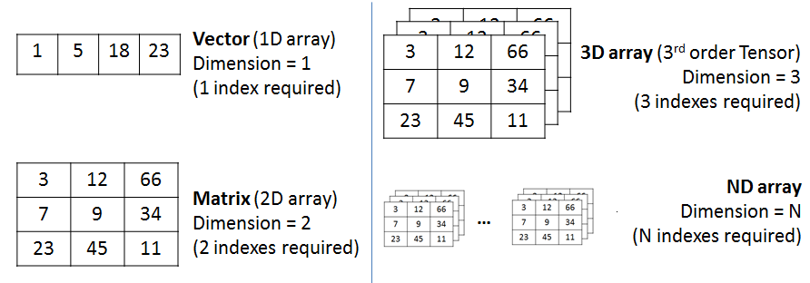
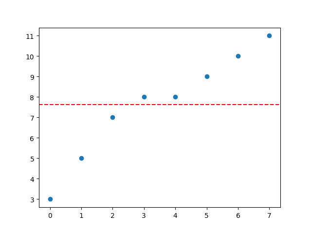
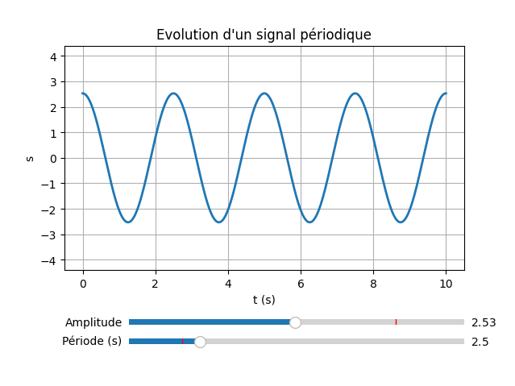

Co-enseignement en Python#
Le langage Python est utilisé en co-enseignement de Mathématiques et Sciences Physiques (BTS CIEL).
Le langage Python#
Cette partie présente les éléments essentiels à connaître sur le langage Python.
Présentation#
Python est un langage de programmation interprété. Il permet la programmation orientée objet. Il est doté d’un typage dynamique fort, d’une gestion automatique de la mémoire par ramasse-miettes et d’un système de gestion d’exceptions.
En 1989, profitant d’une semaine de vacances durant les fêtes de Noël, le programmeur Guido van Rossum utilise son ordinateur personnel pour écrire la première version du langage. Fan de la série télévisée Monty Python’s Flying Circus, il décide de baptiser ce projet Python. La première version publique (numéroté 0.9.0) date de février 1991. Guido van Rossum est le principal auteur de Python, et son rôle de décideur central permanent est reconnu avec humour par le titre de « Dictateur bienveillant à vie ».
Le langage Python est placé sous une licence libre et fonctionne sur la plupart des plates-formes informatiques (Windows, Unix, GNU/Linux, macOS, Android, iOS, …).
CPython est l’implémentation de référence du langage Python. C’est un interpréteur de bytecode écrit en langage C. C’est un logiciel libre.
Python est un langage qui peut s’utiliser dans de nombreux contextes et s’adapter à tout type d’utilisation grâce à des bibliothèques spécialisées. Il est cependant particulièrement utilisé comme langage de script pour automatiser des tâches simples mais fastidieuses. Il est particulièrement répandu dans le monde scientifique, et possède de nombreuses bibliothèques optimisées destinées au calcul numérique (notamment dans la data science). Python est aussi utilisé comme langage de programmation dans l’enseignement élémentaire et supérieur, notamment en France.
Le Zen de Python est un ensemble de 19 principes qui influencent le design du langage de programmation Python, et sont utiles pour comprendre et utiliser le langage : https://fr.wikipedia.org/wiki/Zen_de_Python
Le langage Python est un des langages les plus populaires actuellement (indice TIOBE).
Langages proches : Perl, Ruby, Scheme, Smalltalk et Tcl.
Ressources officielles#
Site officiel : https://www.python.org
Documentation Python 3 : https://docs.python.org/fr/3/
Le tutoriel Python 3 : https://docs.python.org/fr/3/tutorial/
Ressource non officielle : Python Notes for Professionals (pdf)
Deux versions du langage Python ont longtemps cohabité : la version 2 (appelé python legacy) et la version 3. L’annonce de la fin de Python 2 pour le 31 décembre 2019 va définitivement accélérer le processus de migration vers la version 3.
Vous pouvez aussi obtenir facilement des informations sur tout objet, module ou fonction en utilisant l’interpréteur Python avec les fonctions dir(object), help(object) ou encore les docstrings avec l’attribut __doc__.
Par exemple pour le type str :
# code pour obtenir des informations sur les string :
# dir([object]) retourne la liste des attributs de l'objet object :
print dir(str)
# help([object]) invoque le système d'aide intégré :
help(str)
# visualiser les docstrings en appelant le paramètre __doc__ sur un objet :
print str.__doc__
La syntaxe#
Python utilise pour séparer les instructions : le retour chariot, les deux points (:)
Les blocs de code (fonctions, instructions if, boucles for ou while etc.) sont définis par leur indentation après les deux points (:).
L’indentation démarre le bloc et la désindendation le termine.
Il n’y a donc pas d’accolades, de crochets ou de mots clés spécifiques.
Erreurs courantes :
IndentationError : erreur d’indentation
SyntaxError : erreur de syntaxe
TypeError : erreur de type
NameError : erreur de nom
Le typage#
Tous les langages de programmation permettent de manipuler des valeurs avec des variables.
Le typage d’une variable consiste à associer à son nom un « type » de donnée.
Pour rappel, le « type » est la convention d’interprétation (codage) de la séquence de bits qui constitue la variable. Le type de la variable spécifie aussi la longueur de cette séquence (8 bits, 32 bits, 64 bits, …).
Suivant les langages de programmation, il existe plusieurs manières de considérer le typage :
Typage statique : il consiste à demander au programmeur de déclarer expressément chaque variable en indiquant son type. Exemples de langage à typage statique : C, C++, Java, C#
Typage dynamique : il consiste à laisser l’interpréteur réaliser cette opération de typage « à la volée » lors de l’exécution du code. C’est la valeur affectée à la variable qui précisera son type. Exemples de langage à typage dynamique : PHP, Perl, Python, Javascript, bash (shell Linux)
Typage fort : Un langage de programmation est dit fortement typé lorsqu’il garantit que les types de données employés décrivent correctement les données manipulées. Exemples de langage fortement typé : C++, Java, C#, Python
Typage faible : Un langage de programmation est dit faiblement typé lorsqu’il ne considère pas comme une erreur les changements de types. Exemples de langage faiblement typé : PHP, Javascript, C (car il accepte les transtypages implicites comme par exemple
intversshort)
Le langage Python est doté d’un typage dynamique fort.
Les types de base en Python sont relativement complets et puissants, il y a entre autres :
Les objets numériques :
boolest un booléen soitTrue(vrai) soitFalse(faux).intest un entier illimité. Avant la version 3.0, ce type était dénommélong, et le typeintcorrespondait à un entier 32 ou 64 bits. Néanmoins, une conversion automatique évitait tout débordement.floatest un flottant équivalent au typedoubleen Ccomplexest une approximation d’un nombre complexe (typiquement deuxfloat).
Les objets « itérables » :
Les objets
tuplesont des listes non modifiables d’objets hétérogènes.Les objets
listsont des tableaux dynamiques (ils étendent automatiquement leur taille lorsque nécessaire) et acceptent des types de données hétérogènes.Les objets
setsont des ensembles non ordonnés d’objets. Les objetsfrozensetforment une variante non modifiable desset.Les objets
dictsont des tableaux associatifs (ou dictionnaires) permettant d’associer un objet (une clé) à un autre (une valeur).Les objets
strsont des chaînes de caractères. Les chaines d’octets sont des objetsbytes. Les objetsstretbytessont non modifiables.Les objets
bytearraysont des chaînes d’octets modifiables.
Ceci est important et il ne fait aucun mal de le souligner : en Python tout est objet. Les chaînes sont des objets. Les listes sont des objets. Les fonctions sont des objets. Même les modules sont des objets.
En Python, on distingue deux types d’objets : les muables ou mutable (list, dict, set, …) et les immuables ou immutable (str, int, float, tuple, …).
Les muables (mutable) sont ceux qu’on peut modifier après leur création. Les immuables (immutable) sont ceux qu’on ne peut pas modifier après création.
# attention les chaînes de caractères ne sont pas modifiables même avec l'opérateur []
# Impossible : message[0] = 'X'
# il faut créer une nouvelle chaîne
message = 'X' + message[1:]
print message
Voir aussi :
find(),replace(),split(), …
Les objets itérables sont parcourus à l’aide d’une boucle for de la manière suivante :
for element in objet_iterable:
traiter(element)
Il est possible de dériver les classes des types de base pour créer ses propres types.
Exemple d’utilisation des types en Python :
#!/usr/bin/python3
# coding: utf-8
a = 1 # un entier
b = 2.5 # un float
c = "hello" # une chaine de caracteres
# afficher le type d'une variable :
print(type(a)) # <class 'int'>
print(type(b)) # <class 'float'>
print(type(c)) # <class 'str'>
# transtypage :
a = int(b) # a vaut 2
# vérifier le type d'une variable :
print(isinstance(a, int))
Pour connaître le type d’une variable, il suffit d’utiliser la fonction interne à Python type(). Pour transtyper (cast) une variable, on préfixe les parenthèses avec le type désiré. Voir aussi : int(), float(), str() et aussi bin() et hex()
Écriture binaire#
bin(n)renvoie l’écriture binaire de l’entiernsous la forme d’une chaîne. Par exemple :bin(17)renvoie'0b10001'.Pour écrire directement un nombre en écriture binaire, il suffit d’écrire le nombre en commençant par
0b(sans guillemets). Par exemple :0b11011vaut27(en déciaml)
Opérations de base#
Une affectation se fait avec l’opérateur =
n = 3 # n prend la valeur 3
Contrairement à d’autres langages de programmation (C/C++ ou Java), une affectation dans Python est une association d’une variable avec ici un objet immuable de type
intcontenant la valeur. La variablenne contient pas la valeur3mais uniquement la référence (i.e. l’adresse mémoire) où est stockée la valeur3.
print("valeur = ", 3) # valeur = 3
print("type de valeur = ", type(3)) # type de valeur = <class 'int'>
print("référence de valeur = ", id(3)) # référence de valeur = 137360268902704
n = 3
print("n = ", n) # n = 3
print("type de n = ", type(n)) # type de n = <class 'int'>
print("référence de n = ", id(n)) # référence de n = 137360268902704
m = n
print("m = ", m) # m = 3
print("type de m = ", type(m)) # type de m = <class 'int'>
print("référence de m = ", id(m)) # référence de m = 137360268902704
print("n == m ? ", n == m) # n == m ? True
print("n is m ? ", n is m) # n is m ? True
n = 4
print("n = ", n) # n = 4
print("m = ", m) # m = 3
print("référence de n = ", id(n)) # référence de n = 137360268902736
print("n == m ? ", n == m) # n == m ? False
print("n is m ? ", n is m) # n is m ? False
Remarques :
n == mcompare les valeurs denet demn is mcompare les références denet dem
Opérations de base sur les entiers (int) : + (addition), - (soustraction), * (multiplication), // (quotient de la division euclidienne), ** (puissance), % (reste de la division euclidienne, modulo)
Opérations de base sur les nombres flottants (float) : + (addition), - (soustraction), * (multiplication), / (division), ** (puissance)
Comparaisons : == (comparaison), != (différent), > (strictement supérieur), < (strictement inférieur), >= (supérieur ou égal), <= (inférieur ou égal)
Opérations sur les booléens (bool) : or (ou), and (et) et not (non)
Quelques opérations en Python :
# Addition des valeurs des variables a et b
a + b
# Soustraction des valeurs des variables a et b
a - b
# Produit des valeurs des variables a et b
a * b
# Quotient des valeurs des variables a et b
a / b
# Puissance entière de a
a ** 3
# Racine carrée de a
sqrt(a)
# Reste de la division euclidienne de a par b
a % b
# Quotient de la division euclidienne de a par b
a // b
# Incrémente la variable c de 1
c = c + 1
# Affecte (stocke) la valeur 1.4 dans la variable x et la valeur 3.65 dans la variable y
x = 1.4
y = 3.65
# Ou simultanément
x,y = 1.4,3.65
# Renvoie aléatoirement un nombre entier entre 3 et 12 inclus
n = randint(3, 12)
# Renvoie aléatoirement un nombre décimal entre 0 et 1 exclus
n = random()
Quelques fonctions intrinsèques :
abs(x): renvoie la valeur absolue dexint(x): convertitxen entierfloat(x): convertitxen flottantstr(x): convertitxen chaîne de caractèresbool(x): convertitxen booléen
Saisie au clavier#
On utilise suivant les versions de Python :
En Python 3,
input()retourne une chaîne commeraw_input()en Python 2En Python 2,
input()est équivalent àeval(raw_input())
input(prompt) et raw_input(prompt) peuvent recevoir en argument une invite (prompt).
Pour lire plusieurs choses sur la même ligne :
print "Saisir un pays et une ville : "
mots = raw_input().split(" ")
pays = mots[0]
ville = mots[1]
print("Vous habitez à {} ({})".format(ville, pays))
print "Saisir un pays et une ville : "
pays, ville = raw_input().split(" ")
print("Vous habitez à {} ({})".format(ville, pays))
print "Saisir une longueur et une largeur : "
mots = raw_input("-> ").split(" ")
longueur = int(mots[0])
largeur = int(mots[1])
print(longueur * largeur)
print "Saisir une longueur et une largeur : "
longueur, largeur = map(int, raw_input("-> ").split(" "))
print(longueur * largeur)
Affichage à l’écran#
On utilise print :
# coding: utf-8
# affiche une chaîne de caractères
print("Hello world !")
s = "Hello world !"
print(s)
print(s + s) # concaténation
# affiche des valeurs
print(1)
i = 1
print(i)
f = 0.5
print('i = %d et f = %.1f' % (i, f))
# avec un formatage :
print('{0:5d}'.format(i))
print(repr(i).rjust(5))
print(repr(i).zfill(5))
# En Python3 :
print('.', end='') # pour désactiver le saut de ligne par défaut de print
Ou
writedumodule sys:import sys sys.stdout.write('.') # il n'y aura pas de saut de ligne automatique ici
Conteneurs de base#
Les types de base des conteneurs dans Python sont :
str: Chaînes de caractères, structures indicées immuable (immutable)list: Listes, structures de données muable (mutable). Les indices des listes contenant \(n\) éléments sont numérotés de \(0\) à \(n–1\) (idem pour les tuples et les chaînes de caractères)tuple: Tuples, structuress indicées immuables (immutable). On peut créer un tuple avec ou sans parenthèses.deque: Deques (« dèque »), structures de données muable (mutable) qui généralise le fonctionnement des piles (LIFO, Last In First Out) et des files (FIFO, First In First Out)dict: Dictionnaires, structures de données muable (mutable) ou tableaux associatifs
Un conteneur (container) est un objet qui contient d’autres objets (une collection d’objets). Il fournit un moyen de gérer les objets contenus (au minimum ajout, suppression, parfois insertion, tri, recherche, …) ainsi qu’un accès à ces objets.
On rencontre deux catégories de copies (import copy) pour les objets muables (listes, dictionnaires, deques, …) :
La fonction
copy()réalise une copie superficielle. Les éléments sont copiés s’il n’y pas de structure imbriquée. Si les éléments sont des listes par exemple, alors l’adresse mémoire des listes est copiée.La fonction
deepcopy()réalise une copie profonde pour les structures imbriquées. Si les éléments sont des listes, alors la copie profonde copie bien les listes imbriquées.
Les chaînes de caractère#
cf. le type str
''ou""
Les données textuelles en Python sont manipulées avec des objets str ou strings. Les chaînes sont des séquences (comme les listes) immuables de code Unicode.
>>> s = "Hello world!"
>>> print(type(s), s)
<class 'str'> Hello world!
Immuable ?
>>> s[0] = 'h'
Traceback (most recent call last):
File "<stdin>", line 1, in <module>
TypeError: 'str' object does not support item assignment
>>> print(type(s[0]), s[0])
<class 'str'> H
Lien : Opérations usuelles sur des chaînes
Sous-chaînes :
s[i:j]renvoie la sous-chaîne des caractères de rangiàj-1des. Exemple :s[2:4]renvoie “ll”.s[i:]renvoie les caractères de rangijusqu’à la fin de chaine. Exemple :s[6:]renvoie “world!”.s[:j]renvoie les caractères du début jusqu’au rangj − 1de chaine. Exemple :s[:5]renvoie “Hello”.
Les bytes sont des séquences immuables d’octets.
>>> b = b"Hello world!"
>>> print(type(s), s)
<class 'bytes'> b'Hello world!'
Quelques fonctions utiles :
L’opérateur de concaténation pour les chaînes de caractères est le
+La fonction
ord()reçoit un caractère en argument et retourne le code correspondant :
>>> i = ord('A')
>>> print(type(i), i)
<class 'int'> 65
La fonction
chr()reçoit un entier en argument et retourne le caractère correspondant :
>>> c = chr(65)
>>> print(type(c), c)
<class 'str'> A
Un caractère
cest alphanumérique si l’une des fonctions suivantes renvoieTrue:c.isalpha(),c.isdecimal(),c.isdigit(), ouc.isnumeric().La casse des caractères :
c.islower()renvoieTruesicest une minuscule etc.isupper()renvoieTruesicest une capitale.
Écriture formatée en python#
L’écriture formatée est un mécanisme permettant d’afficher des variables avec un certain format, par exemple justifiées à gauche ou à droite, ou encore avec un certain nombre de décimales pour les floats.
f-string est le diminutif de formatted string literals. Les chaînes de caractères ou encore strings sont représentées par un texte entouré de guillemets simples 'bonjour' ou doubles "bonjour".
L’équivalent en f-string est tout simplement la même chaîne précédée du caractère f sans espace entre les deux : f"Ceci est une chaîne de caractères" Ce caractère f avant les guillemets va indiquer à Python qu’il s’agit d’une f-string permettant de mettre en place le mécanisme de l’écriture formatée, contrairement à une string normale. Les f-strings permettent une meilleure organisation de l’affichage des variables.
x = 42
nom = "John"
print(f"{nom} a {x} ans") # affichera John a 42 ans
Les f-string permettent de remplacer des variables au sein d’une chaîne de caractères. On peut également spécifier le format de leur affichage.
Exemple : Le prix du paquet de bonbons est de 3.28 euros. Il sera partagé entre 3 personnes. Chacun doit payer sa part. Chaque personne devra donc payer (affichage avec deux décimales) :
prix = 3.28
a_payer = prix/3
print(f"chacun doit {a_payer:.2f})
Les nombres à virgule flottante#
Le type “flottants” ou float de Python permet de représenter certains nombres réels. On dit aussi nombre à virgule flottante. Nous pouvons considérer qu’un nombre “flottant” est la représentation d’une approximation d’un nombre réel, de la même façon que le décimal est une approximation du réel.
Certains nombres ont une écriture décimale infinie périodique (par exemple
7/11 = 0.636363...).Et certains ont une écriture binaire infinie périodique alors que même leur écriture décimale est finie (c’est le cas par exemple de
0.1et0.2)
Conséquences : Certains calculs peuvent donc ne pas être exacts.
print(0.1) # affiche 0.1
print(3*0.1) # affiche 0.30000000000000004
somme = 0
f = 0.1
for i in range(10000):
somme = somme + f
print(somme) # affiche 1000.0000000001588
print(0.5 - 0.2 - 0.2 - 0.1) # affiche -2.7755575615628914e-17
Ainsi un calcul avec des nombres à virgule ne peut-être qu’approximatif. Cependant, plus on augmente la taille du registre du processeur et plus nous pourrons représenter de valeurs, et plus nos calculs gagneront en précision.
Comme nous sommes limités sur la précision des flottants, on transforme les tests d’égalités en tests d’inégalités à une précision donnée.
Ainsi :
0.2 + 0.1 == 0.3 # False
Par contre, en utilisant une précision du millionième on peut contourner le problème :
import math # pour utiliser la fonction valeur absolue fabs()
precision = 1E-6
math.fabs((0.2 + 0.1) - 0.3) < precision # True
Lien : module math
Comment arrondir ?
Arrondir un nombre décimal, c’est le transformer en un entier. Il existe plusieurs manières de calculer des arrondis et nous en verrons deux ici :
arrondi à l’entier inférieur
floor, arrondi à l’entier supérieurceil.
Par exemple, si on a une température de 12.3 degrès alors les deux arrondis ci-dessus vont donner les valeurs 12 (entier inférieur) et 13 (entier supérieur).
from math import ceil, floor
# Entier inférieur (partie entière)
arrondiInferieur = floor(12.3) # affiche 12
print(arrondiInferieur)
# Entier supérieur
arrondiSuperieur = ceil(12.3) # affiche 13
print(arrondiSuperieur)
arrondi au plus près
round
La fonction round() en Python permet d’arrondir un nombre à un certain nombre de décimales spécifié. Par défaut, elle arrondit au nombre entier le plus proche, mais vous pouvez également spécifier le nombre de décimales à utiliser lors de l’arrondi en utilisant un deuxième argument. La fonction renvoie un nombre entier ou un nombre à virgule flottante en fonction de l’entrée et du paramètre d’arrondi.
round(3.5) # 4
round(3.14) # 3
round(3.14, 0) # 3.0
round(3.14, 1) # 3.1
# arrondit 3.14 à la première décimale des dizaines, donnant 0
round(3.14, -1) # 0.0
# arrondit 233.14 à la deuxième décimale des centaines, donnant 0
round(233.14, -2) # 200.0
Instructions conditionnelles#
Test simple :
if condition:
instruction(s)
if condition1 and condition2:
instruction(s) # si la condition1 ET la condition2 sont vrais (True)
if condition1 or condition2:
instruction(s) # si la condition1 OU la condition2 est vrai (True)
Opérateurs :
==,!=,<,>,<=,>,and,oretnot
Python permet cette écriture (non autorisée dans la plupart des autres langages) :
if 3.14 < x < 3.142:
print("x is near pi")
Test avec alternative :
if condition:
instruction(s)
else:
instruction(s)
Tests imbriqués :
if condition1:
instruction(s)
elif condition2:
instruction(s)
else:
instruction(s)
elifest la contraction deelse if
Expressions conditionnelles :
expression1 if condition else expression2
Instructions itératives#
Boucle inconditionnelle ou boucle bornée (boucle for) :
for element in iterable:
instruction(s)
for variable in range():
instruction(s)
La fonction
range()permet d’énumérer le nombre de passages dans la boucle bornée : –range(n), oùnest un entier, fait prendre à la variable les valeurs entières de0àn–1, donc un total denvaleurs ; –range(n,m), oùnetmsont des entiers, fait prendre à la variables les valeurs entières denàm–1; –range(n,m,k), oùn,metksont des entiers, fait prendre à la variable les valeurs entières denàm–1, avec un pas dek.
Boucle conditionnelle ou boucle non bornée (boucle while) :
while condition:
instruction(s)
TANT QUE (
while) laconditionest VRAI (True), on reste dans la boucle.
Pour quitter immédiatement une boucle « tant que » (while) ou une boucle « pour » (for), on peut utiliser l’instruction break.
Les listes#
cf. les listes
[]
Une liste est une collection ordonnée d’éléments (entiers, flottants, chaînes de caractères, …) séparés par des virgules et mis entre crochets.
Les listes sont de simples suites d’éléments indexés (à partir de
0et les indices négatifs sont autorisés). Dans les listes, les éléments qui se suivent ne sont pas nécessairement de même type. Contrairement aux chaînes de caractères, les listes sont des séquences modifiables.
L1 = [] # une liste vide
L2 = list() # une liste vide
print(type(L1)) # <class 'list'>
print(type(L2)) # <class 'list'>
L = [3, 5, 7, 9, 11] # une liste d'entiers
print(type(L)) # <class 'list'>
print(L) # [3, 5, 7, 9, 11]
# parcourir une liste
for element in L:
print(element)
En Python, les suites numériques sont modélisées par des listes.
Les principales fonctionnalités des listes :
Instruction |
Description |
|---|---|
|
L’élément de la liste |
|
Les éléments de la liste |
|
True si l’élément |
|
True si l’élément |
|
Ajoute |
|
Insère |
|
Efface les éléments de |
|
Supprime un élément de |
|
Supprime le premier élément de valeur |
|
La longueur de |
|
Le plus petit élément de |
|
Le plus grand élément de |
|
Indice de la première occurrence de |
|
Nombre total d’occurrences de |
|
Retourne la position de la première occurrence de |
Pour générer une liste, on utilise fréquemment la fonction range(n, m) qui génère une liste d’entiers de \(n\) à \(m -1\).
L3 = list(range(0, 10)) # identique à range(10)
print(L3) # [0, 1, 2, 3, 4, 5, 6, 7, 8, 9]
Compréhension de liste#
Python propose aussi une syntaxe pour exprimer la compréhension de liste qui permet de générer des listes de façon concise :
print("Nombres pairs de la liste L3 : ")
print([i for i in L3 if i%2 == 0])
# une liste de carrés
carres = [x**2 for x in range(10)]
print("Liste de carrés : ")
print(carres) # [1,4,9,16,...]
liste_partielle = [x for x in carres if x > 4] # [9,16,...]
La compréhension de liste (list comprehension) est une technique puissante qui permet de créer des listes de manière concise et efficace en une seule ligne.
La syntaxe de base : [expression for élément in iterable]
avec :
expression: Ce qui sera ajouté à la liste.élément: Une variable qui prend chaque valeur de l’itérable.iterable: Une séquence (liste, tuple, range, chaîne, etc.).
Exemple simple : créer une liste de carrés
liste_carres = [x**2 for x in range(5)]
print(liste_carres) # [0, 1, 4, 9, 16]
Exemple : un tableau de \(n\) lignes et \(p\) colonnes rempli de 0
tableau = [[0 for j in range(p)] for i in range(n)]
Exemple : créer une matrice (liste de listes) de taille \(n \times n\) remplie de 0
n = 3 # morpion !
matrice = [[0] * n for _ in range(n)]
print(matrice) # [[0, 0, 0], [0, 0, 0], [0, 0, 0]]
Ici, on n’a pas besoin de variable pour la boucle et pour cela on utilise l’écriture
_(underscore) qui est ici une variable “jetable” (throwaway variable). Attention,_(underscore) a plusieurs usages spécifiques qui dépendend du contexte dans lequel il est utilisé.
On peut aussi créer un dictionnaire en compréhension :
>>> {x: x**2 for x in (2, 4, 6)}
{2: 4, 4: 16, 6: 36}
Les tuples#
cf. les tuples
()
Les objets tuple (n-uplet) sont des listes non modifiables d’objets hétérogènes (différentes valeurs séparées par des virgules) :
# coding: utf-8
# Déclaration des tuples
# soit en créant une tuple d'emblée, vide ou non :
tuple1 = ()
tuple2 = (1,2,3,4,5)
print type(tuple1) # <type 'tuple'>
print type(tuple2)
# soit en typant la variable :
tuple3 = tuple()
tuple3 = (1,) # ne pas oublier la virgule
tuple3 = 1,2,3 # les parenthèses ne sont pas obligatoires
print type(tuple3)
print(tuple3)
# Utilisation des tuples
print "Longueur de tuple2 : "
print len(tuple2) # 5
print "Les éléments de tuple2 : "
for element in tuple2:
print(element)
print "Quelques éléments de tuple2 : "
for n in range(0,5,2):
print tuple2[n]
Les tuples et Python permettent de réaliser des assignations multiples :
x, y = (1, 2)
print x, y # 1 2
x, y = y, x
print x, y # 2 1
Les dictionnaires#
cf. les dictionnaires
{}
Les objets dict sont des tableaux associatifs (ou dictionnaires) muables permettant d’associer un objet (une clé) à un autre (une valeur), le tout embrassé par des accolades { }. La clé est la valeur sont associées par un : et les membres se suivent, séparés par des virgules , comme dans des listes.
L’utilisation d’un dictionnaire est en particulier utile lorsque les clés sont des mots qui permettent ainsi d’avoir une approche sémantique des données.
En résumé : Les dictionnaires (ou tableau associatif ou table de hachage) est une structure de données qui permet une association clé–valeur.
Les clés peuvent être de n’importe quel type immuable. Les chaînes de caractères et les nombres peuvent toujours être des clés.
# un dictionnaire { clé:valeur, ... }
stock = {"pomme": 5, "poire": 3, "fraise": 10, "banane": 2}
# affiche le dictionnaire
print(type(stock), stock) # <class 'dict'> {'pomme': 5, 'poire': 3, 'fraise': 10, 'banane': 2}
# affiche les clés du dictionnaire
print("Les clés sont :", stock.keys()) # dict_keys(['pomme', 'poire', 'fraise', 'banane'])
# affiche les valeurs du dictionnaire
print("Les valeurs sont :", stock.values()) # dict_values([5, 3, 10, 2])
# affiche les clés/valeurs du dictionnaire
print("Les clés/valeurs sont :", stock.items()) # dict_items([('pomme', 5), ('poire', 3), ('fraise', 10), ('banane', 2)])
# ...
Exemple de base :
# Création d'un dictionnaire vide.
dictionnaire1 = {} # ou dictionnaire1 = dict()
print(type(dictionnaire1)) # <type 'dict'>
# Ajout de clés/valeurs.
dictionnaire1['nom'] = 'Pascal'
dictionnaire1['prenom'] = 'Blaise'
# Parcours des clés, des valeurs et des clés/valeurs.
print("Les clés/valeurs : ")
for cle,valeur in dictionnaire1.items():
print(cle, valeur)
dictionnaire1.clear()
print("Les clés/valeurs : ")
for cle,valeur in dictionnaire1.items():
print(cle, valeur)
# Création d'un dictionnaire avec des valeurs.
dictionnaire2 = {'nom':'Descartes','prenom':'René'}
print(dictionnaire2)
# Accès à une valeur.
print(dictionnaire2['nom'])
# Test d'appartenance.
print('nom' in dictionnaire2)
print('age' in dictionnaire2)
# Parcours des clés, des valeurs et des clés/valeurs.
print("Les clés : ")
for cle in dictionnaire2.keys():
print(cle)
print("Les valeurs : ")
for valeur in dictionnaire2.values():
print(valeur)
print("Les clés/valeurs : ")
for cle,valeur in dictionnaire2.items():
print(cle, valeur)
# Suppression d'une clé.
del dictionnaire2['nom']
print("Les clés/valeurs : ")
for cle,valeur in dictionnaire2.items():
print(cle, valeur)
# Création d'un dictionnaire à partir de deux listes.
cles = ['nom', 'prenom', 'age']
valeurs = ['Durand', 'Jean', 30]
dictionnaire3 = dict(zip(cles, valeurs))
print(dictionnaire3)
Créer un dictionnaire en compréhension :
>>> {x: x**2 for x in (2, 4, 6)}
{2: 4, 4: 16, 6: 36}
Les ensembles#
cf. les ensembles
set()
Un ensemble (set) est une collection non ordonnée d’éléments uniques. Les doublons sont automatiquement supprimés.
Il ne conserve aucun ordre particulier des éléments.
Un ensemble peut être modifié en ajoutant ou supprimant des éléments.
On ne peut pas accéder aux éléments via un indice.
Exemple :
# Création d'un ensemble vide.
s = set()
print(type(s))
print("Ensemble vide : ", s)
# Ajout d'éléments.
s.add(1)
s.add(2)
s.add(3)
print("Ensemble : ", s)
# Suppression d'un élément.
s.remove(2)
print("Ensemble : ", s)
# Test d'appartenance.
print("3 appartient à l'ensemble : ", 3 in s)
print("2 appartient à l'ensemble : ", 2 in s)
# Parcours des éléments.
for e in s:
print(e, end=" ")
print()
# Création d'un ensemble à partir d'une liste.
s = set([1, 2, 3, 4, 5])
print("Ensemble : ", s)
Les tableaux à N dimensions#
En Python, les tableaux à N dimensions peuvent être représentées par :
des listes de listes
Une liste est une collection ordonnée d’éléments (entiers, flottants, chaînes de caractères, …) séparés par des virgules et mis entre crochets. Les listes sont de simples suites d’éléments indexés (à partir de 0 et les indices négatifs sont autorisés). Dans les listes, les éléments qui se suivent ne sont pas nécessairement de même type. Contrairement aux chaînes de caractères, les listes sont des séquences modifiables.
>>> t = [[1, 2, 3], [4, 5, 6]]
>>> print(type(t), t)
<class 'list'> [[1, 2, 3], [4, 5, 6]]


Exemple pour un tableau à 2 dimensions :
import numpy as np
t = np.array([[1,2,3],[4,5,6],[7,8,9],[10,11,12]])
print(f'Tableau t : \n{t}')
print(f'Géométrie : {t.shape}')
print(f'3ème ligne : {t[2]}')
print(f'Le 2ème élément de sa 4ème ligne : {t[3, 1]}')
print(f'Les 2 derniers éléments des 2 dernières lignes :\n {t[-2:, -2:]}')
print(f'La somme de ses éléments : {t.sum()}')
On obtient :
Tableau t :
[[ 1 2 3]
[ 4 5 6]
[ 7 8 9]
[10 11 12]]
Géométrie : (4, 3)
3ème ligne : [7 8 9]
Le 2ème élément de sa 4ème ligne : 11
Les 2 derniers éléments des 2 dernières lignes :
[[ 8 9]
[11 12]]
La somme de ses éléments : 78
Initialisation d’un ndarray :
>>> np.arange(10)
array([0, 1, 2, 3, 4, 5, 6, 7, 8, 9])
>>> np.linspace(0, 1, 5)
array([0. , 0.25, 0.5 , 0.75, 1. ])
>>> np.zeros( (2,5) )
array([[0., 0., 0., 0., 0.],
[0., 0., 0., 0., 0.]])
>>> np.full((1, 3), 42)
array([[42, 42, 42]])
Slicing :
Le slicing va permettre d’extraire des éléments de structures de données séquentielles comme une liste, une chaîne de caractères ou un ndarray. L’opérateur de slicing s’écrit sous la forme : sequence[indice_de_depart_inclus:indice_de_fin_exclu:pas_de_saut]. Si un des paramètres est omis, Python utilise ses valeurs par défaut.
Exemple :
import numpy as np
# tableau à 1 dimension
n = np.arange(10)
print(n[2:5]) # [2, 3, 4]
print(n[:4]) # [0, 1, 2, 3]
print(n[5:]) # [5, 6, 7, 8, 9]
print(n[::2]) # [0, 2, 4, 6, 8] (un élément sur deux)
# tableau à 2 dimensions
t = np.array([[1,2,3],[4,5,6],[7,8,9],[10,11,12]])
print(f'Tableau t : \n{t}')
print(f'Les 2 premières lignes :\n{t[:2]}')
print(f'Les 2 dernières lignes :\n{t[-2:]}')
print(f'Les 2 premières colonnes :\n{t[:,:2]}')
print(f'Les 2 dernières colonnes :\n{t[:,-2:]}')
On obtient :
[2 3 4]
[0 1 2 3]
[5 6 7 8 9]
[0 2 4 6 8]
Tableau t :
[[ 1 2 3]
[ 4 5 6]
[ 7 8 9]
[10 11 12]]
Les 2 premières lignes :
[[1 2 3]
[4 5 6]]
Les 2 dernières lignes :
[[ 7 8 9]
[10 11 12]]
Les 2 premières colonnes :
[[ 1 2]
[ 4 5]
[ 7 8]
[10 11]]
Les 2 dernières colonnes :
[[ 2 3]
[ 5 6]
[ 8 9]
[11 12]]
Boolean indexing :
Le slicing va permettre d’extraire des éléments de structures de données séquentielles (comme une liste, une chaîne de caractères ou un ndarray) en utilisant une expression booléenne.
Avec le boolean indexing, la géométrie (shape) peut être modifiée.
Exemple :
import numpy as np
t = np.array([[1,2,3],[4,5,6],[7,8,9],[10,11,12]])
print(f'Tableau t : \n{t}')
print(f'Les valeurs supérieures à 10 :\n{t[t > 10]}') # retourne un tableau à une seule dimension !
t[t > 10] = 0
print(f'Après avoir mis à 0 les valeurs supérieures à 10 :\n{t}')
On obtient :
Tableau t :
[[ 1 2 3]
[ 4 5 6]
[ 7 8 9]
[10 11 12]]
Les valeurs supérieures à 10 :
[11 12]
Après avoir mis à 0 les valeurs supérieures à 10 :
[[ 1 2 3]
[ 4 5 6]
[ 7 8 9]
[10 0 0]]
Voir le module NumPy.
Les matrices#
En Python, les matrices peuvent être représentées par :
des listes de listes
Une liste est une collection ordonnée d’éléments (entiers, flottants, chaînes de caractères, …) séparés par des virgules et mis entre crochets. Les listes sont de simples suites d’éléments indexés (à partir de 0 et les indices négatifs sont autorisés). Dans les listes, les éléments qui se suivent ne sont pas nécessairement de même type. Contrairement aux chaînes de caractères, les listes sont des séquences modifiables.
Par exemple, la matrice \(A\) sera représentée par la liste de listes :
>>> A = [[1, 2, 3], [4, 5, 6]]
>>> print(type(A), A)
<class 'list'> [[1, 2, 3], [4, 5, 6]]
$ pip install numpy
>>> import numpy as np
>>> A = np.array([[1, 2, 3], [4, 5, 6]])
>>> print(type(A), A)
<class 'numpy.ndarray'> [[1 2 3]
[4 5 6]]
>>> print(A.shape)
(2, 3)
Le sous module numpy.linalg regroupent de nombreuses fonctions pour l’algèbre linéaire sur les matrices.
#!/usr/bin/env python
# encoding: utf-8
# liste de listes
A = [[1, 2, 3], [4, 5, 6]]
print(type(A), A)
# type matrix de numpy
import numpy as np
import numpy.linalg as alg
A = np.array([[1, 2, 3], [4, 5, 6]])
print(type(A), A)
print(A.shape)
A = np.array([[3, 5], [6, 17]])
print("A =", A)
print(A.shape)
#print(A.size) # nb éléments
# parcourir une matrice
for ligne in A:
for element in ligne:
print(element)
print("Déterminant", alg.det(A))
print("Rang", alg.matrix_rank(A))
#print(A.ndim)
B = np.array([[1], [19]])
print("B =", B)
# produit matriciel
Y = np.dot(A, B)
print("Produit matriciel AB", Y)
print("Transposée")
print(np.transpose(A))
print(A.T)
# pour le chiffre de hill
comatrice = np.linalg.inv(A).T * alg.det(A)
print("Transposée de sa comatrice", comatrice.T)
print("multiplication par un scalaire")
A = np.array([[17, 21], [20, 3]])
B = 5*A
print("B = 5xA =", B)
# appliquer un modulo à chaque élément
def modulo(element):
return element % 26
B = np.apply_along_axis(modulo, axis=1, arr=B)
print("B mod 26 =", B)
# conversion en entier
# np.round(B).astype(int)
Voir le module NumPy.
Autres conteneurs#
Python propose un module collections avec d’autres objets conteneurs : namedtuple, deque, Counter, OrderedDict, defaultdict, ChainMap, UserDict, UserList et UserString.
Exemples :
OrderedDict: des dictionnaires qui conservent l’ordre d’insertion
import collections
#from collections import OrderedDict
d = collections.OrderedDict()
d['c'] = 1
d['b'] = 2
d['a'] = 3
# conserve l'ordre d'insertions
print(d.keys()) # ['c', 'b', 'a']
Counter: un dictionnaire spécialisé pour le comptage
import collections
#from collections import Counter
c = collections.Counter()
print(c['roger']) # 0
c['roger'] += 1
print(c['roger']) # 1
for i in range(0,5):
c['robert'] += 1
print(c['robert']) # 0 1 2 3 4 5
print(c) # Counter({'robert': 5, 'roger': 1})
# compte les occurences
print(collections.Counter('le soleil brille')) # Counter({'l': 5, 'e': 3, ' ': 2, 'i': 2, 'b': 1, 'o': 1, 's': 1, 'r': 1})
namedtuple: des tuples nommés et structurés
#from collections import namedtuple
Fiche = collections.namedtuple("Fiche", "nom prenom age")
f = Fiche(nom="Dupond", prenom="robert", age=66)
print(f) # Fiche(nom='Dupond', prenom='robert', age=66)
# toujours itérable :
for c in f:
print c # Dupond robert 66
print(f.nom) # Dupond
deque: des listes à double entrée, les objets de la liste peuvent ainsi être ajoutés ou retirés, soit à gauche soit à droite, et en temps constant
#from collections import deque
d = collections.deque('ell')
for elem in d:
print(elem.upper()) # E L L
d.append('o')
d.appendleft('h')
print(d) # deque(['h', 'e', 'l', 'l', 'o'])
d.pop()
print(d) # deque(['h', 'e', 'l', 'l'])
print(collections.deque(reversed(d))) # deque(['l', 'l', 'e', 'h'])
Ramasse-miettes#
Si créer des instances est simple, les détruire est encore plus simple. En général, il n’y a pas besoin de libérer explicitement les instances, elles sont libérées automatiquement lorsque les variables auxquelles elles sont assignées sont hors de portée. Sinon, le mot-clé del sert à supprimer explicitement une instance.
La technique du ramasse-miettes (garbage collector) Python est le « comptage de références » et lorsque ce compteur descend alors à 0, Python détruit l’instance automatiquement. En général, vous pouvez simplement ignorer la gestion mémoire et laisser Python nettoyer derrière vous car les fuites mémoire sont rares avec ce langage.
Les fonctions#
Python permet la programmation procédurale.
Déclaration et définition de fonctions :
Python dispose de fonctions comme la plupart des autres langages, mais il n’a pas de fichiers d’en-tête séparés comme C/C++.
Lorsque vous avez besoin d’une fonction, vous n’avez qu’à la déclarer et l’écrire (la définir).
def foo(n):
instruction(s)
return resultat
Le mot clé def débute une déclaration de fonction, suivi du nom de la fonction, puis des arguments entre parenthèses (ici n). Les arguments multiples sont séparés par des virgules.
Les fonctions Python ne définissent pas le type de leur valeur de retour, elle ne spécifient même pas si elle retournent une valeur ou pas. En fait chaque fonction Python retournera une valeur, si la fonction exécute une instruction return, elle va en retourner la valeur, sinon elle retournera None, la valeur nulle en Python.
Les arguments ne spécifient pas de types de données. En Python, les variables ne sont jamais explicitement typées. En se basant sur la valeur que vous lui assignez, Python gère les types de données en interne.
Documentation des fonctions :
Vous pouvez documenter une fonction Python en lui donnant une chaîne de documentation (doc string).
def foo(n):
"""Je suis une fonction qui reçoit un paramètre n.
Je retourne un string."""
print foo.__doc__
Les tripes guillemets indiquent une chaîne multi-lignes.
Une doc string, si elle existe, doit être la première chose déclarée dans une fonction (la première chose après les deux points). Techniquement parlant, vous n’êtes pas obligés de donner une doc string à votre fonction, mais vous devriez toujours le faire.
Une fonction, comme tout le reste en Python, est un objet ! Qu’est-ce qu’un objet ? Chaque langage de programmation définit le terme « objet » à sa manière. En Python, tout est objet dans le sens où tout peut être assigné à une variable ou passé comme argument à une fonction.
Exemple :
Les fonctions Python n’ont pas de begin ou end explicites, ni d’accolades qui pourraient marquer là ou commence et ou se termine le code de la fonction. Le seul délimiteur est les deux points (:) et l’indentation du code lui-même.
#!/usr/bin/python
# coding: utf-8
def reponse(x):
"""Affiche la réponse x"""
print "La réponse est", x
t = "Hello"
i = 0
reponse(t) # La réponse est Hello
reponse(i) # La réponse est 0
def ratio(numerateur, denominateur=1):
"""Retourne le ratio n/d"""
return numerateur/denominateur
print ratio(1, 2) # 0
print ratio(1., 2.) # 0.5
print ratio(5) # 5
Comme tout langage à typage dynamique, il n’est pas possible d’effectuer une surchage de fonctions (ou de méthodes). Voir : Comment effectuer une surcharge ?
Python autorise les paramétres par défaut pour les fonctions :
def foo(a=2):
print a
foo() # affiche 2
foo(12) # affiche 12
foo(a=12) # affiche 12
foo() # affiche 2
def bar(a=[]):
print a
bar() # affiche []
bar([1,2,3,4]) # affiche [1, 2, 3, 4]
bar() # affiche []
- warning:
Attention, le paramètre par défaut est construit une fois pour toute quand la fonction est générée. Cela peut provoquer des effets de bord lorsque le paramètre est muable (mutable) :
import random
def stuff(a=[]):
a.append(random.randint(0,9))
return a
print stuff() # affiche [0]
print stuff() # affiche [0, 8]
print stuff() # affiche [0, 8, 8]
print stuff() # affiche [0, 8, 8, 7]
print stuff([]) # affiche [9]
print stuff([5,1]) # affiche [5, 1, 6]
print stuff() # affiche [0, 8, 8, 7, 1]
Notions de référence#
En fait, une variable est un nom (un label, un identifiant) pointant vers une référence d’un objet.
a = 1
a = 2
- warning:
Attention,
an’est pas un emplacement mémoire qui stocke la valeur1puis la valeur2. En Python,aest une référence à un objet avec la valeur1, puis est réaffecté en tant que référence à un objet avec la valeur2:
a = 2
print "Référence de a : %d" % id(a) # Référence de a : 33956160
a = 1
print "Référence de a : %d" % id(a) # Référence de a : 33956184
b = a
print "Référence de b : %d" % id(b) # Référence de b : 33956184
b = 3
print "Référence de b : %d" % id(b) # Référence de b : 33956136
Lorsqu’on a affecté a à b (b = a), on a copié la valeur de la référence de a dans b (à ce moment là, a et b ont la même référence). Ici, les valeurs 1, 2 et 3 sont des « objets » différents et les références ne sont donc pas les mêmes.
Idem pour une liste :
liste1 = [1, 2, 3]
print "Référence de liste1 : %d" % id(liste1) # Référence de liste1 : 140042289226384
liste2 = liste1
print "Référence de liste2 : %d" % id(liste2) # Référence de liste2 : 140042289226384
liste2.append(4)
print(liste2) # [1, 2, 3, 4]
print(liste1) # [1, 2, 3, 4]
print "Référence de liste1 : %d" % id(liste1) # Référence de liste1 : 140042289226384
print "Référence de liste2 : %d" % id(liste2) # Référence de liste2 : 140042289226384
print liste1 is liste2 # True
Mais ici, liste1 et liste2 ont la même référence car il n’y a qu’un seul objet (mais deux identifiants liste1 et liste2 qui ont la même valeur de référence).
C’est ce mécanisme qui est utilisé quand on passe des arguments à une fonction : Il y un passage de référence (par valeur) des paramètres de la fonction. C’est la valeur de la référence qui est copiée.
def ajouter(l, a):
print "Référence de liste : %d" % id(liste) # Référence de liste : 140660673366712
l.append(a)
liste = [1,2,3,4]
print "Référence de liste : %d" % id(liste) # Référence de liste : 140660673366712
print(liste) # [1, 2, 3, 4]
ajouter(liste,5)
print(liste) # [1, 2, 3, 4, 5]
print "Référence de liste : %d" % id(liste) # Référence de liste : 140660673366712
Évidemment, cela dépendra si l’objet passé en argument est mutable ou non.
Gestion des exceptions#
Python permet la gestion des exceptions afin de faciliter la mise en oeuvre de code robuste.
cf les exceptions en Python3.
Une exception est l’interruption de l’exécution du programme à la suite d’un événement particulier (c’est-à-dire exceptionnel !) et le transfert du contrôle à des fonctions spéciales appelées gestionnaires.
def ratio(num, den):
return num/den
print ratio(1., 2.) # affiche 0.5
# le programme s'arrête et lève une exception :
print ratio(1, 0) # lève une exception ZeroDivisionError
print ratio("1", "2") # lève une exception TypeError
print ratio(1., i) # lève une exception NameError
La gestion d’une exception est découpée en plusieurs parties distinctes :
le déclenchement :
raise(lance ou lève une exception)le traitement (inspection et capture) : instructions inséparables
tryetexceptla gestion peut être complétée par deux autres mots clés :
finally(un bloc qui est exécuté après que tous les autres blocs aient été exécutés) etelse(bloc exécuté si aucune exception n’est levée).
Forme minimaliste :
try:
# instructions pouvant provoquer une exception
except: # attrape toutes les exceptions
# instruction(s) exécutée(s) en cas d'exception
Forme complète :
try:
# instructions pouvant provoquer une exception
except: # attrape toutes les exceptions
# instruction(s) exécutée(s) en cas d'exception
else:
# instruction(s) exécutée(s) si aucune exception n'est levée
finally:
# instruction(s) toujours exécutée(s) à la fin
Il est possible et conseillé de préciser le type d’exception après le mot clé except :
ingredients = ['lait', 'farine', 'sucre', 'sel']
try:
# si i est plus grand que la taille du tableau
i = 4
ingredient = ingredients[i]
except IndexError:
ingredient = None
print ingredient # affiche None
Ou d’en indiquer plusieurs :
ingredients = ['lait', 'farine', 'sucre', 'sel']
try:
# si i n'est pas un type entier
i = "0"
ingredient = ingredients[i]
except (IndexError,TypeError):
ingredient = None
print ingredient # affiche None
Lever une exception :
def truc(a):
if a == 0 :
raise ValueError("a ne peut être égal à zéro")
print a
try:
truc(1)
truc(-1)
truc(0) # lève une exception ValueError
except ValueError as e:
print e # a ne peut être égal à zéro
On peut aussi relancer une exception :
def ratio(num, den):
try:
if den == 0:
raise ZeroDivisionError("Le dénominateur ne peut être égal à zéro")
except ZeroDivisionError:
raise # on relance l'exception
else:
return num/den
try:
print ratio(1., 2.) # affiche 0.5
print ratio(1, 0) # lève l'exception ZeroDivisionError
except Exception as e:
print(e) # affiche "Le dénominateur ne peut être égal à zéro"
Il est possible de créer ses propres (classes d’) exceptions en héritant de la classe
Exception.
Les assertions#
Les assertions sont un moyen simple de s’assurer, avant de continuer, qu’une condition est respectée. On utilise le mot clé assert : assert condition si condition est égale à True, l’exécution se poursuit normalement sinon, une exception AssertionError est levée :
#!/usr/bin/python
# coding: utf-8
def ratio(num, den):
try:
assert den != 0
except AssertionError:
return None
else:
return num/den
print ratio(1., 2.) # affiche 0.5
print ratio(1, 0) # affiche None
Les assertions sont le fondement des tests unitaires en programmation informatique.
Classes et Objets (POO)#
Une classe se définit avec le mot-clé class.
Python oblige de déclarer l’instance de l’objet courant, conventionnellement nommée
self, comme premier argument des méthodes, et à chaque fois que l’on souhaite accéder à une donnée de cette instance dans le corps de cette méthode.
La méthode __init__ permet d’initialiser une instance, elle est appelé automatiquement lorsqu’un objet a été créé. Il existe aussi __new__ qui est appelé avant la création de l’objet.
class Vehicule:
"""La classe Vehicule"""
# un attribut
couleur = ""
# des méthodes
def __init__(self, couleur="blanche"):
self.couleur = couleur
def avance(self):
"""La méthode avance()"""
print "j'avance"
def tourne(self):
"""La méthode tourne()"""
print "je tourne"
# une fonction spéciale
def __repr__(self):
""" L'affichage de l'objet dans l'interpréteur """
return "Vehicule(couleur=\'" + self.couleur + "\')"
v1 = Vehicule()
v1.avance() # j'avance
# affiche le nom de la classe :
print v1.__class__.__name__ # Vehicule
# et son type :
print type(v1) # <type 'instance'>
print v1 # Vehicule(couleur='blanche')
Le langage Python a un support très limité de l’encapsulation. Il n’y a pas, comme en Java ou C++ par exemple, de contrôle de l’accessibilité par des mots clefs comme
protectedouprivate.
Les variables d’instance “privées” (private) auxquelles on ne peut accéder qu’à l’intérieur d’un objet n’existent donc pas en Python. Cependant, il existe une convention en Python :
un nom précédé d’un underscore (par exemple
_b) doit être traité comme un membre non publique (qu’il s’agisse d’une fonction, d’une méthode ou d’un attribut).un nom précédé de deux underscore (par exemple
__c) sera textuellement remplacé par_classname__c, oùclassnameest le nom de classe actuel (pour éviter les conflits de noms avec ceux définis par des sous-classes). Ceci fait que l’accèsmonObjet.__cprovoquera une exception de typeAttributeErroret pourrait faire croire à une encapsulation privée ce qui n’est pas le cas).
Le slogan des développeurs Python est « we’re all consenting adults here » (nous sommes entre adultes consentants) et qu’une simple convention suffira pour préciser les responsabilités (Source : fr.wikipedia.org).
Exemple :
class MaClasse:
def __init__(self):
# trois attributs :
self.a = 1
self._b = 2
self.__c = 3
monObjet = MaClasse()
# affiche les attributs d'un instance :
print(vars(monObjet)) # {'a': 1, '_MaClasse__c': 3, '_b': 2}
# donc :
print(monObjet.a) # {'a': 1, '_MaClasse__c': 3, '_b': 2}
print(monObjet._b) # {'a': 1, '_MaClasse__c': 3, '_b': 2}
print(monObjet._MaClasse__c) # {'a': 1, '_MaClasse__c': 3, '_b': 2}
# mais :
print(monObjet.__c) # AttributeError: MaClasse instance has no attribute '__c'
Ensuite, le mécanisme des propriétés (property) permettra d’implémenter des accesseurs/mutateurs (getter/setter) : Manipuler les attributs.
Python reconnaît trois types de méthodes :
les méthodes d’instance, qui sont celles définies par défaut. Elles reçoivent comme premier argument une instance de la classe où elles ont été définies.
les méthodes de classe, qui reçoivent comme premier argument la classe où elles ont été définies. Elles peuvent être appelées depuis une instance ou directement depuis la classe. Elles sont déclarées avec le décorateur
@classmethod.les méthodes statiques, qui ne reçoivent pas de premier argument implicite. Elles sont similaires aux méthodes statiques que l’on trouve en Java ou C++. Elles sont déclarées avec le décorateur
@staticmethod.
Comme tout langage à typage dynamique, il n’est pas possible d’effectuer une surchage de fonctions ou de méthodes. Voir : Comment effectuer une surcharge ?
Python fournit un mécanisme pour définir un ensemble pré-défini d’opérateurs : tout objet Python peut se voir doté de méthodes dites spéciales.
Ces méthodes, commençant et finissant par deux tirets de soulignement (underscores), sont appelées lors de l’utilisation d’un opérateur sur l’objet : + (méthode __add__), += (méthode __iadd__), [] (méthode __getitem__), () (méthode __call__), etc. Des méthodes comme __repr__ et __str__ permettent de définir la représentation d’un objet dans l’interpréteur interactif et son rendu avec la fonction print. Il existe aussi : __new__ et __del__.
class Temps:
def __init__(self, heure=0, minute=0, seconde=0):
self.valeur = (heure*3600)+(minute*60)+seconde
def __add__(self, a):
temps = Temps()
if type(a) == int:
temps.valeur = self.valeur + a
elif isinstance(a, Temps):
temps.valeur = self.valeur + a.valeur
else: raise AttributeError, "aucun traitement pour le type " + str(type(a))
return temps
def __radd__(self, o):
return self + o
def __str__(self):
return "{0:02}:{1:02}:{2:02}".format((self.valeur/3600), (self.valeur%3600)/60, (self.valeur%60))
t1 = Temps()
print("t1 = %s" % t1) # t1 = 00:00:00
t2 = Temps(1, 60, 30)
print("t2 = %s" % t2) # t2 = 02:00:30
# appel __add__ :
t1 = t2 + 10
print("t1 = %s" % t1) # t1 = 02:00:40
# appel _radd__ :
t1 = 20 + t2
print("t1 = %s" % t1) # t1 = 02:00:50
t1 = t1 + t2
print("t1 = %s" % t1) # t1 = 04:01:20
Python supporte l’héritage (et l’héritage multiple).
class Voiture(Vehicule):
"""La classe Voiture"""
def __init__(self, couleur="", model=""):
Vehicule.__init__(self, couleur)
# attributs
self.model = model
def afficherModel(self):
print self.model
def tourne(self):
Vehicule.tourne(self)
print "mais en douceur !"
v2 = Voiture("rouge", "306")
v2.afficherModel() # 306
v2.avance() # j'avance
v2.tourne() # je tourne mais en douceur !
# il faudrait redéfinir __repr__
print v2 # Vehicule(couleur='rouge')
setattr(v2, "model", "206")
print getattr(v2, "model")
v2.afficherModel() # 206
v3 = Voiture()
# il faudrait redéfinir __repr__
print v3 # Vehicule(couleur='')
Il existe plusieurs techniques pour manipuler les attibuts autrement que directement :
v2.model = "406"
print(v2.model) # 406
v2.afficherModel() # 406
Il est possible de lire ou de modifier un attribut dynamiquement avec les fonctions getattr() et setattr().
v2 = Voiture("rouge", "306")
setattr(v2, "model", "206")
print getattr(v2, "model") # 206
v2.afficherModel() # 206
Il est aussi possible de passer par des getter (accesseur) et des setter (mutateurs). Il faut que la classe hérite de object et que l’attribut soit préfixé par un underscore ou encore mieux deux underscore.
Il y a deux écriture possibles :
soit en passant par
propertysoit en utilisant
@property
Exemple de getter (accesseur) et des setter (mutateur) :
# Version 1
class Personne(object):
def __init__(self, nom=""):
# un atribut pseudo privé :
self.__nom = nom
@property
def nom(self):
print "accesseur de nom"
return self.__nom
@nom.setter
def nom(self, nom):
print "mutateur de nom"
self.__nom = nom
@nom.deleter
def nom(self):
del self.__nom
p = Personne("Dupond")
# appel mutateur (setter) :
p.nom = "Durand"
# appel accesseur (getter) :
print(p.nom)
# ou :
# Version 2
class Personne(object):
def __init__(self, nom=""):
# un atribut pseudo privé :
self.__nom = nom
def getNom(self):
print "accesseur de nom"
return self.__nom
def setNom(self, nom):
print "mutateur de nom"
self.__nom = nom
def delNom(self):
del self.__nom
#nom = property(getNom, setNom)
nom = property(getNom, setNom, delNom, "Je suis la propriété nom.")
p = Personne("Dupond")
# appel mutateur (setter) :
p.nom = "Durand"
# appel accesseur (getter) :
print(p.nom)
Les modules et les packages#
Python permet la programmation modulaire.
Les modules sous Python sont des fichiers (.py) qui regroupent des ensembles de fonctions et/ou de classes.
Pour utiliser des modules dans un programme, il faut utiliser l’instructions import :
import math
print math.sqrt(4)
# ou en créant un alias :
import math as m
print m.sqrt(4) # 2.0
On peut aussi utiliser from mais cela est déconseillé pour des risques de conflits de noms :
from math import *
print sqrt(4) # 2.0
Il existe de nombreux modules standards dont : cgi, math, os, pickle, random, re, socket, sys, time, urllib, …
Il est évidemment possible de créer ses propres modules. Par exemple, un fichier fonctions.py qui contient les fonctions reponse et ratio vues précédemment.
Pour cela, il faut :
soit que le module existe sous la forme d’un fichier
.pysitué dans le même dossier que le fichier qui l’importe. Donc :
import fonctions
print fonctions.ratio(1.,2.) # 0.5
soit qu’il soit dans un autre répertoire du programme et le module sera importé à partir du nom du répertoire.
Dans ce cas, Il faudra :
soit créer un fichier
__init__.pyqui assurera l’importation de tous les fichiers que le répertoire contient :
from fonctions import *
Puis, on importe le module lib (qui est le nom du répertoire qui contient le fichier fonctions.py) :
import lib
print lib.ratio(1.,2.) # 0.5
soit modifier dynamiquement la liste des chemins en ajoutant les répertoires supplémentaires qui contiennent des modules à importer :
import sys
sys.path.append("monchemin")
import fonctions
print fonctions.ratio(1.,2.) # 0.5
Il est donc possible de regrouper des modules dans des packages. Comme pour d’autres langages, un package est tout simplement un répertoire. Ce répertoire pourra contenir d’autres répertoires (des packages) et des fichiers (des modules).
Lors de l’importation d’un module, le programme va tout d’abord vérifier si le module à importer se trouve dans le dictionnaire
sys.modules(module de base + les modules d’autres bibliothèques que vous avez installées). Si le module n’est pas trouvé, le programme le cherchera à partir de la liste définie parsys.path(qui contient le répertoire courant, la variable d’environnementPYTHONPATHentre autres).
Au moment d’importer le module, Python va lire (ou créer si il n’existe pas) un fichier .pyc (à partir de la version 3.2, ce fichier se trouve dans un dossier __pycache__). Ce fichier est généré par Python et contient du code compilé du module.
__main__#
Si vous voulez ajouter du code au sein d’un module pour le tester par exemple, il sera utile de procéder ainsi :
#!/usr/bin/python
# coding: utf-8
def ratio(numerateur, denominateur=1):
"""Retourne le ratio n/d"""
return numerateur/denominateur
if __name__ == "__main__":
print ratio(1., 2.) # 0.5
Les modules sont des objets et tous les modules disposent de l’attribut prédéfini __name__.
Le __name__ d’un module dépend de la façon dont vous l’utilisez. Si vous importez le module, son __name__ est le nom de fichier du module sans le chemin d’accès ni le suffixe.
Mais vous pouvez aussi lancer le module directement en tant que programme, dans ce cas __name__ va prendre par défaut une valeur spéciale __main__.
__debug__#
L’exécution des scripts avec l’interpréteur python3 sont réalisés en mode debug par défaut. Pour le désactiver, il faut exécuter le script avec l’option -O soit par exemple python3 -O script.py pour supprimer les déclarations assert et tout code conditionnel à la valeur de __debug__ :
...
# affichage en mode debug seulement
if __debug__:
print("par défaut")
else:
print("Option -O")
On obtient :
$ python3 script.py
__debug__ = True
par défaut
$ python3 -O script.py
__debug__ = False
Option -O
Les fichiers#
Pour lire le contenu d’un fichier, il faudra tout d’abord l’ouvrir (open()) puis le lire (read() qui retourne une chaîne de caractères ou readlines() qui retourne une liste de chaînes de caractères) et pour finir le fermer (close()) :
fichier = open('/etc/passwd','rb') # Ouverture du fichier en mode lecture
lignes = fichier.readlines() # Récupération du contenu du fichier
# Traitement ligne par ligne
for ligne in lignes:
sp = ligne.split('#')[0] # Élimination des commentaires potentiels
sp = sp.split(':') # Séparation
#print sp
print "Utilisateur : " + sp[0] + " - UID : " + sp[2]
fichier.close() # Fermeture du fichier
Voir aussi la méthode
seek()pour se déplacer dans un fichier.
Pour écrire dans un fichier, il suffit del’ouvrir (open()) puis d’écrire (write() pour une chaîne de caractères ou writelines() pour une liste de chaînes de caractères) et pour finir le fermer (close()) :
fichier = open('essai.txt','w') # Ouverture du fichier en mode écriture (avec écrasement)
fichier.write("hello world !") # Écriture d'un contenu dans le fichier
fichier.close() # Fermeture du fichier
Voir aussi le module
picklepour enregistrer des objets dans des fichiers.
Les méthodes open() et close() ne sont pas obligatoires :
fichier = file('essai.txt','r')
print fichier.read()
Pour récupérer la liste des fichiers d’un répertoire :
os.listdir(path)retourne une liste contenant les noms de tous les fichiers et répertoires de pathou
glob.glob(path)qui renvoie une liste contenant le chemin complet des fichiers ou répertoires contenus dans path
import glob
import os.path
fichiers=[]
repertoire = glob.glob('./*')
for i in repertoire:
if os.path.isfile(i):
fichiers.append(i)
print fichiers
Voir aussi :
os.path.getsize()qui retourne la taille d’un fichier,os.remove()pour supprimer ,os.rename()pour renommer ,os.move()pour déplacer,os.chdir()pour changer de répertoire courant, … et le moduleftplibpour dialoguer avec un serveur FTP.
Pour exécuter une commande, on fera :
import os
os.system("ls");
Voir aussi : les foncions du module
os
Pour récupérer le résultat d’une commande, on fera :
import os
commande = os.popen('ls ./', 'r') # comme pour les fichiers, 'r' ou 'w'
print commande.read() # les mêmes méthodes qu'un fichier
Voir aussi :
Popendesubprocess
Les expressions régulières#
Python dispose d’un module re qui permet de manipuler des expressions rationnelles (regular expression).
Une expression rationnelle est une suite de caractères qu’on appelle plus simplement motif (pattern) pour trouver une correspondance (match). On les utilise dans le cadre d’une recherche ou d’un remplacement de texte. Les mécanismes de base pour former un motif sont basés sur des caractères spéciaux de substitution, de groupement et de quantification.
Lire : Expression régulière
Exemple : un fichier texte contenant des numéros de téléphone
MARIE 04-91-85-96-34
ODILE 04-91-56-92-35
ALAIN 04-42-46-87-12
Utilisation de la fonction findall() :
#!/usr/bin/python
# coding: utf-8
import re
fichier = open('./numtel','rb') # Ouverture du fichier en mode lecture
lignes = fichier.readlines() # Récupération du contenu du fichier
regexp = r"((0[1-9])((-[0-9]{2}){4}))"
## Traitement ligne par ligne
for ligne in lignes:
print ligne
print re.findall(regexp, ligne)
Utilisation de la fonction match() :
#!/usr/bin/python
# coding: utf-8
import re
fichier = open('./numtel','rb') # Ouverture du fichier en mode lecture
lignes = fichier.readlines() # Récupération du contenu du fichier
regexp = r"((0[1-9])((-[0-9]{2}){4}))"
## Traitement ligne par ligne
for ligne in lignes:
#print ligne
sp = ligne.split(' ') # Séparation
if re.match(regexp, sp[1]) is not None:
print "Nom : " + sp[0] + " - Tél : " + sp[1]
else:
print "Numéro téléphone non trouvé !"
Utilisation de la fonction compile() :
#!/usr/bin/python
# coding: utf-8
import re
fichier = open('./numtel','rb') # Ouverture du fichier en mode lecture
lignes = fichier.readlines() # Récupération du contenu du fichier
regexp = r"((0[1-9])((-[0-9]{2}){4}))"
regex = re.compile(regexp)
## Traitement ligne par ligne
for ligne in lignes:
#print ligne
sp = ligne.split(' ') # Séparation
if regex.match(sp[1]) is not None:
print "Nom : " + sp[0] + " - Tél : " + sp[1]
else:
print "Numéro téléphone non trouvé !"
Utilisation de la fonction search() :
#!/usr/bin/python
# coding: utf-8
import re
fichier = open('./numtel','rb') # Ouverture du fichier en mode lecture
lignes = fichier.readlines() # Récupération du contenu du fichier
regexp = r"((0[1-9])((-[0-9]{2}){4}))"
## Traitement ligne par ligne
for ligne in lignes:
#print ligne
sp = ligne.split(' ') # Séparation
print re.search(regexp, sp[1]).groups()
Utilisation de la fonction search() en donnant des noms à des groupes :
#!/usr/bin/python
# coding: utf-8
import re
fichier = open('./numtel','rb') # Ouverture du fichier en mode lecture
lignes = fichier.readlines() # Récupération du contenu du fichier
regexp = r"((0[1-9])((-[0-9]{2}){4}))"
## Traitement ligne par ligne
for ligne in lignes:
#print ligne
sp = ligne.split(' ') # Séparation
m = re.search(r"(?P<numero>(?P<indicatif>0[1-9])((-[0-9]{2}){4}))", sp[1])
print m.group('numero')
print m.group('indicatif')
Utilisation de la fonction sub() pour remplacer le format 0X-XX-XX-XX-XX en 0X XX XX XX XX :
#!/usr/bin/python
# coding: utf-8
import re
fichier = open('./numtel','rb') # Ouverture du fichier en mode lecture
lignes = fichier.readlines() # Récupération du contenu du fichier
regexp = r"((0[1-9])((-[0-9]{2}){4}))"
## Traitement ligne par ligne
for ligne in lignes:
#print ligne
sp = ligne.split(' ') # Séparation
print re.sub(r"([0-9]{2})-([0-9]{2})-([0-9]{2})-([0-9]{2})-([0-9]{2})", r"\1 \2 \3 \4 \5", sp[1])
Programmer en Python#
Cette partie présente les éléments essentiels à connaître pour programmer en Python.
Ubuntu#
Programmer en Python sous Ubuntu : https://doc.ubuntu-fr.org/python
Par défaut, Python est installé sur GNU/Linux. Sinon, il faut au moins :
$ sudo apt install python python3-pip python3-venv
Version de Python :
$ python3 --version
Python 3.6.8
Il est possible de programmer directement dans l’interpréteur Python en mode CLI :
Python 2 :
$ python
Python 2.7.15+ (default, Oct 72019, 17:39:04)
[GCC 7.4.0] on linux2
Type "help", "copyright", "credits" or "license" for more information.
>>> a = 1
>>> print a
1
>>> exit()
Python 3 :
$ python
Python 3.10.12 (main, May 27 2025, 17:12:29) [GCC 11.4.0] on linux
Type "help", "copyright", "credits" or "license" for more information.
>>> a = 1
>>> print a
File "<stdin>", line 1
print a
^^^^^^^
SyntaxError: Missing parentheses in call to 'print'. Did you mean print(...)?
>>> print(a)
1
>>> exit()
Un script d’exemple helloworld.py :
#!/usr/bin/env python3
# coding: utf-8
# un commentaire : mon premier programme Python !
import sys
print(sys.version)
print()
# saisie d'une chaîne de caractères
langue = input("Quelle est votre langue ? (fr, ...)")
# une instruction conditionnelle
if langue == "fr" :
message = "Bonjour le monde"
else :
message = "Hello world"
# voir aussi : if ... elif ... else
# saisie d'un entier
nb = int(input("Donnez un nombre : "))
i = 0
# une boucle
while i < nb:
#print(message)
print(message, i + 1, " fois")
i += 1
La première ligne sert à préciser le chemin de l’interpréteur précédé des caractères
#!(le shebang) qui exécutera le script. Cette ligne est inutile dans le cas d’une programmation web.
Il existe plusieurs manières d’exécuter un script Python de façon locale (mode CLI) :
le rendre exécutable :
$ chmod +x helloworld.py
$ ./helloworld.py
utiliser l’interpréteur Python :
$ python3 helloworld.py
Windows#
Téléchargement pour Windows: https://www.python.org/downloads/windows/
Documentation : https://docs.python.org/fr/3/using/windows.html
Visual Studio Code (VSCode)#
Visual Studio Code est un éditeur de code extensible développé par Microsoft pour Windows, Linux et macOS.
C’est un éditeur de code multi-plateforme, open source et gratuit, supportant une dizaine de langages (C/C++, Java, PHP, Python, Javascript, …).
Il existe de nombreuses extensions pour le langage Python :
Environnement virtuel#
Il n’est pas toujours possible, pour une installation unique de Python, de couvrir tous les besoins de toutes les applications.
La solution est de créer un environnement virtuel qui contient une installation de Python pour une version particulière ainsi que des paquets additionnels.
Python fournit le module venv pour créer et gérer des environnements virtuels.
Un environnement virtuel est un espace isolé qui contient son propre interpréteur Python et ses propres paquets (bibliothèques et modules).
Créer un environnement virtuel :
$ python -m venv <mon_environnement_virtuel>
Et pour activer un environnement virtuel sur Windows Mac, les OS bases sur UNIX :
# Sur Windows :
source chemin_vers_mon_environnement_virtuel\Scripts\activate
# Sur Mac ou Linux :
source chemin_vers_mon_environnement_virtuel/bin/activate
Désactiver un environnement virtuel :
deactivate
Si besoin, supprimer définitivement l’environnement virtuel :
rm -rf chemin_vers_mon_environnement_virtuel
Il existe des alternatives à venv comme virtualenv, pipenv ou Anaconda.
virtualenv est une sur-couche au module venv.
Installation :
# via pip
$ pip install virtualenv
# via apt
$ apt install python-virtualenv
$ virtualenv -h
...
Créer un environnement virtuel :
$ virtualenv <mon_environnement_virtuel>
Identique à la commande
python -m venv <mon_environnement_virtuel>
Conda est un système de gestion de paquets open source et un système de gestion d’environnement permettant d’installer plusieurs versions de paquets logiciels et leurs dépendances, et de passer facilement de l’une à l’autre. Il fonctionne sous Linux, OS X et Windows.
Liens :
Installation : https://docs.conda.io/projects/conda/en/latest/user-guide/install/index.html
Documentation : https://docs.conda.io/projects/conda/en/latest/index.html
Dans VSCode, avec la palette de commandes (Ctrl-Shift-P) :
Sélectionner un interpréteur :
Créer un environnement virtuel :
Guide des bonnes pratiques#
Le Zen de Python est un ensemble de 19 principes qui influencent le design du langage de programmation Python, et sont utiles pour comprendre et utiliser le langage : https://fr.wikipedia.org/wiki/Zen_de_Python
PEP 8 (Python Enhancement Proposal 8) est un guide des directives et des meilleures pratiques pour écrire du code Python.
PEP 8 recommande d’utiliser des mots en minuscules séparés par des traits de soulignement _ pour nommer les fonctions. C’est donc la convention snake_case qui s’applique.
On peut utiliser « _ » dans le nom des variables et les fonctions mais pas « - ». On fera de même pour les noms de fichiers.
Bac à sable et développement en ligne#
Il est souvent nécessaire de passer par un “bac à sable”.
En informatique, le bac à sable (sandbox) est une zone d’essai permettant d’exécuter des programmes en phase de test ou dans lesquels la confiance est incertaine. C’est notamment très utilisé en sécurité informatique pour sa notion d’isolation.
Il existe de nombreux sites web qui fournissent des EDI (Environnement de Développement Intégré) en ligne pour tester du code ou des services : un espace d’apprentissage séparé. Ils permettent aussi d’échanger des exemples.
Quelques sites :
basthon : https://basthon.fr/
https://www.tutorialspoint.com/execute_python3_online.php
https://python-fiddle.com/
Try It Online : https://tio.run/#python3
Et aussi Visual Studio Code Online : https://vscode.dev/
Gestionnaire de paquet pip#
pip est un gestionnaire de paquets utilisé pour installer et gérer des paquets écrits en Python. De nombreux paquets peuvent être trouvés sur le dépôt Python Package Index.
Lien : https://pip.pypa.io/
Version :
$ python -m pip --version
Installer un paquet :
$ pip install nom-du-paquet # dernière version
# ou :
$ python -m pip install nom-du-paquet # dernière version
$ python -m pip install nom-du-paquet==1.0.4 # version spécifique
$ python -m pip install 'nom-du-paquet>=1.0.4' # version minimum
L’option
--upgradepermet de faire une mise à jour.
Voir les détails d’un paquet installé : pip show nom-du-paquet
Rechercher un paquet : pip search "requete"
Désinstaller un paquet : pip uninstall nom-du-paquet
pip propose une fonctionnalité permettant de gérer des listes de paquets ainsi que leurs numéros de version, au travers d’un fichier de prérequis requirements.txt. Ceci permet de recréer efficacement un groupe entier de paquets sur un nouvel environnement ou un nouvel environnement virtuel.
$ pip install -r requirements.txt
Le fichier requirements.txt peut être généré avec la commande suivante :
$ python -m pip list # lister les paquets installés
$ python -m pip freeze > requirements.txt
pip list --outdatedpermet de voir si une nouvelle version est disponible
Modules#
Cette partie présente les principaux modules Python utilisés lors des séances de Co-enseignement de Mathématiques et Sciences Physiques (BTS CIEL).
Voir aussi : https://www.tresfacile.net/top-75-meilleurs-modules-et-bibliotheques-python/
Importer un module :
import numpy
Importer un module en lui donnant un alias :
import numpy as np
Importer une fonction d’un module :
from scipy.stats import linregress
Importer toutes les fonctions d’un module :
from math import *
Certaines fonctions portent le même nom dans des bibliothèques différentes. Il est donc préférable de ne pas utiliser
from <module> import *mais plutôtimport <module>.
Lister toutes les fonctions (méthodes) d’un module Python :
>>> import math
>>> print(dir(math))
['__doc__', '__loader__', '__name__', '__package__', '__spec__', 'acos', 'acosh', 'asin', 'asinh', 'atan', 'atan2', 'atanh', 'ceil', 'comb', 'copysign', 'cos', 'cosh', 'degrees', 'dist', 'e', 'erf', 'erfc', 'exp', 'expm1', 'fabs', 'factorial', 'floor', 'fmod', 'frexp', 'fsum', 'gamma', 'gcd', 'hypot', 'inf', 'isclose', 'isfinite', 'isinf', 'isnan', 'isqrt', 'lcm', 'ldexp', 'lgamma', 'log', 'log10', 'log1p', 'log2', 'modf', 'nan', 'nextafter', 'perm', 'pi', 'pow', 'prod', 'radians', 'remainder', 'sin', 'sinh', 'sqrt', 'tan', 'tanh', 'tau', 'trunc', 'ulp']
>>> for i in dir(math): print(i)
...
__doc__
__loader__
__name__
__package__
__spec__
acos
acosh
...
>>> help(math)
...
Voir aussi : Le module
inspect
math#
Fonctions |
Description |
|---|---|
sqrt(a) |
Racine carrée de \(a\) |
exp(x) |
Exponentielle d’un nombre réel \(x\) |
log(x) |
Logarithme népérien d’un nombre réel \(x\) |
pi |
Équivaut à la constante mathématique \(\pi\). |
e |
Constante \(e\), image de 1 par la fonction exponentielle |
sin(a) |
Sinus d’un nombre \(a\) |
cos(a) |
Cosinus d’un nombre \(a\) |
floor(x) |
entier juste en-dessous de x |
ceil(x) |
entier juste au-dessus de x |
gcd(a,b) |
pgcd de a et de b |
random#
Fonctions |
Description |
|---|---|
randint(a,b) |
Renvoie un nombre entier aléatoire compris entre deux entiers a et b inclus |
random() |
Renvoie un nombre décimal aléatoire strictement compris entre 0 et 1 |
uniform(a,b) |
Renvoie un nombre décimal aléatoire compris entre deux nombres décimaux a et b |
choice(“chaine”) |
Renvoie aléatoirement un des éléments de la chaîne de caractères “chaine” |
shuffle() |
mélange les données |
fractions#
Le module fractions fournit un support de l’arithmétique des nombres rationnels.
Une instance de Fraction peut être construite depuis une paire d’entiers, depuis un autre nombre rationnel, ou depuis une chaîne de caractères.
from fractions import Fraction
f1 = Fraction(3,2)
f2 = Fraction (1.5)
f3 = Fraction("3/2")
print(f1) # affiche 3/2
print(f2) # affiche 3/2
print(f3) # affiche 3/2
f3 = f1 + f2
print(f3) # affiche 3
statistics#
Le module statistics est une bibliothèque intégrée à Python pour les statistiques descriptives.
Documentation : https://docs.python.org/fr/3/library/statistics.html
import statistics
Indicateur |
Méthode |
|---|---|
Moyenne |
statistics.mean(donnees) |
Médiane |
statistics.median(donnees) |
Mode |
statistics.mode(donnees) |
Quantiles |
statistics.quantiles(donnees) |
Variance |
statistics.pvariance(donnees) ou statistics.variance(donnees) |
Écart type |
statistics.pstdev(donnees) ou statistics.stdev(donnees) |
Covariance |
statistics.covariance() |
Corrélation |
statistics.correlation() |
Exemple de base :
# cet exemple calcule et affiche une moyenne, médiane et mode en utilisant statistics
# tvaira (2023)
import statistics
# des données
donnees = [3, 5, 7, 8, 8, 9, 10, 11]
# calcule la moyenne
moyenne = statistics.mean(donnees)
# affiche la moyenne
print("La moyenne est : " + str(moyenne)) # 7.625
# calcule la médiane
mediane = statistics.median(donnees) # 8.0
# affiche la médiane
print("La médiane est : " + str(mediane))
# calcule le mode
mode = statistics.mode(donnees) # 8
# affiche la médiane
print("Le mode est : " + str(mode))
JSON#
JSON (JavaScript Object Notation) est un format de données textuelles dérivé de la notation des objets du langage JavaScript. Il permet de représenter de l’information structurée. Créé par Douglas Crockford entre 2002 et 2005, il est décrit par la RFC 7159 de l’IETF. Par définition, JSON est un format d’échange de données.
Site web : json.org
Un document JSON ne comprend que deux types d’éléments structurels :
des ensembles de paires « nom » (alias « clé ») / « valeur » :
"id": "1"des listes de valeurs séparées par des virgules :
"nom": "VAIRA", "prenom": "Thierry".
Ces mêmes éléments représentent trois types de données :
des objets :
{ ... };des tableaux :
[ ... ];des valeurs génériques de type tableau, objet, booléen, nombre, chaîne de caractères ou null (valeur vide).
Exemple de base :
import json
d = {
'id': '1',
'nom': 'VAIRA',
'prenom': 'Thierry'
}
print(json.dumps(d))
print(json.dumps(data, indent=2))
# écriture dans un fichier
with open(fichier, 'w') as f:
json.dump(d, f)
# lecture d'un fichier
with open(filename, 'r') as f:
d = json.load(f)
CSV#
Le format CSV (Comma-separated values) est un format texte ouvert représentant des données tabulaires (cf. tableur) sous forme de valeurs séparées à l’origine par des virgules. Le séparateur n’est pas standardisé (virgule, point-virgule, etc.). Ce format est toutefois assez populaire parce qu’il est relativement facile à générer.
Exemple de base :
# cet exemple affiche le contenu d'un fichier CSV
import csv
with open('./donnees/tmin-tmax-avignon-12-2024.csv', newline='') as fichier:
contenu = csv.reader(fichier, delimiter=':', quoting=csv.QUOTE_NONE)
# récupère la première ligne
entete = next(contenu)
print("Entête : ")
print(entete)
print("Contenu : ")
for ligne in contenu:
print(ligne)
Lire un fichier CSV avec pandas :
import pandas as pd
df = pd.read_csv("./donnees/tmin-tmax-avignon-12-2024.csv")
hashlib#
Le module hashlib implémente une interface commune à différents algorithmes de hachage sécurisés : SHA1, SHA224, SHA256, SHA384, SHA512 et MD5 de RSA (défini par la RFC 1321).
Exemple :
# La fonction intégrée hash()
message = "Hello wordl!"
valeur_hash = hash(message)
print("Message : ", message)
print("Hash : ", valeur_hash)
# Le module hashlib
import hashlib
hash_md5 = hashlib.md5(message.encode())
print("Message : ", message)
print("Hash MD5 : ", hash_md5.hexdigest())
#hash_sha1 = hashlib.sha1(message.encode())
hash_sha1 = hashlib.sha1(b"Hello wordl!")
print("Message : ", b"Hello wordl!")
print("Hash SHA1 : ", hash_sha1.hexdigest())
# hashlib.sha256(text.encode())
# hashlib.sha384(text.encode())
# hashlib.sha512(text.encode())
# Le module secrets https://docs.python.org/3/library/secrets.html
import secrets
sel = secrets.token_hex(16)
hash_sha256 = hashlib.sha256((sel + message).encode())
print("Message : ", message)
print("Sel : ", sel)
print("Hash SHA-256 : ", hash_sha256.hexdigest())
codecs#
Avec le module Python codecs, on peut utiliser la fonction
encode()(oudecode()) pour réaliser ce (dé)chiffrement :
Le module codecs fournit des fonctions pour le encodage et le décodage de données, telles que la conversion de texte entre différents ensembles de caractères. Il prend en charge une large gamme de codages standard.
La plupart des codecs fournis sont des encodages de caractères (ISO/CEI 2022, ISO/CEI 8859-15, UTF-8, …) mais il y a aussi Base64 avec le codec
base64et zlib avec la compression deflate utilisés dans les fichiers au format ZIP.
Exemple UTF-8 :
import codecs
texte = 'mathématiques'
texte_encode = codecs.encode(texte, 'utf-8')
print(texte_encode) # b'math\xc3\xa9matiques'
texte_decode = codecs.decode(texte_encode, 'utf-8')
print(texte_decode) # 'mathématiques'
base64 est un codage de l’information utilisant 64 caractères. L’intérêt de l’encodage base64 est de représenter des données binaires sous forme textuelle. Une transcription hexadécimale en ASCII des octets multiplierait la taille par deux, l’encodage en base64 permet de limiter cette augmentation. Il est principalement utilisé pour la transmission de messages (notamment dans les courriers électroniques) sur Internet. base64 n’est pas un système de chiffrement mais un codage d’information utilisant 64 caractères ASCII.
import codecs
texte = b'Hello, World!'
texte_encode = codecs.encode(texte, 'base64')
print(texte_encode) # b'SGVsbG8sIFdvcmxkIQ=='
print(texte_encode.decode()) # 'SGVsbG8sIFdvcmxkIQ=='
texte_decode = codecs.decode(texte_encode, 'base64')
print(texte_decode) # b'Hello, World!'
print(texte_decode.decode()) # 'Hello, World!'
base64#
Le module base64 fournit des fonctions permettant d’encoder des données binaires en caractères ASCII imprimables et de décoder ces encodages pour les reconvertir en données binaires. Cela inclut les encodages spécifiés dans la RFC 4648 (base64, Base32 et Base16).
import base64
texte = b'Hello, World!'
texte_encode = base64.b64encode(texte)
print(texte_encode) # b'SGVsbG8sIFdvcmxkIQ=='
print(texte_encode.decode()) # 'SGVsbG8sIFdvcmxkIQ=='
texte_decode = base64.b64decode(texte_encode)
print(texte_decode) # b'Hello, World!'
print(texte_decode.decode()) # 'Hello, World!'
Voir le module codecs.
re#
Bibliothèques#
Cette partie présente les principales bibliothèques Python utilisées lors des séances de Co-enseignement de Mathématiques et Sciences Physiques (BTS CIEL).
Voir aussi : https://www.tresfacile.net/top-75-meilleurs-modules-et-bibliotheques-python/
Importer un module :
import numpy
Importer un module en lui donnant un alias :
import numpy as np
Importer une fonction d’un module :
from scipy.stats import linregress
Importer toutes les fonctions d’un module :
from math import *
Certaines fonctions portent le même nom dans des bibliothèques différentes. Il est donc préférable de ne pas utiliser
from <module> import *mais plutôtimport <module>.
Lister toutes les fonctions (méthodes) d’un module Python :
>>> import math
>>> print(dir(math))
['__doc__', '__loader__', '__name__', '__package__', '__spec__', 'acos', 'acosh', 'asin', 'asinh', 'atan', 'atan2', 'atanh', 'ceil', 'comb', 'copysign', 'cos', 'cosh', 'degrees', 'dist', 'e', 'erf', 'erfc', 'exp', 'expm1', 'fabs', 'factorial', 'floor', 'fmod', 'frexp', 'fsum', 'gamma', 'gcd', 'hypot', 'inf', 'isclose', 'isfinite', 'isinf', 'isnan', 'isqrt', 'lcm', 'ldexp', 'lgamma', 'log', 'log10', 'log1p', 'log2', 'modf', 'nan', 'nextafter', 'perm', 'pi', 'pow', 'prod', 'radians', 'remainder', 'sin', 'sinh', 'sqrt', 'tan', 'tanh', 'tau', 'trunc', 'ulp']
>>> for i in dir(math): print(i)
...
__doc__
__loader__
__name__
__package__
__spec__
acos
acosh
...
>>> help(math)
...
Voir aussi : Le module
inspect
NumPy#
NumPy est une bibliothèque pour langage de programmation Python, destinée à manipuler des matrices ou tableaux multidimensionnels ainsi que des fonctions mathématiques opérant sur ces tableaux.
Le langage de programmation Python n’a pas été conçu à l’origine pour le calcul numérique. Cependant, il a très tôt attiré l’attention de la communauté scientifique et technique. De nombreuses bibliothèques sont donc apparues pour accompagner ce domaine.
$ pip install numpy
NumPy apporte la structure de données ndarray (tableaux multidimensionnels) à Python.
Contrairement à la structure de liste (
list) de Python, cette structure de données n’est pas dynamique, et le type de ses éléments doit être homogène (de même type).
Pour créer un tableau à une dimension, on utilise la fonction numpy.array() en passant en argument une liste des nombres séparés par des virgules et entourés de crochets ([ et ]). Pour un tableau à deux dimension, on utilise une liste de listes grâce à des crochets imbriqués.
Voir Les tableaux à N dimensions et les matrices.
La fonction numpy.shape() retourne la géométrie du tableau.
La fonction numpy.zeros(n) crée un tableau à une dimension de n zéros. Et numpy.zeros((m, n)) crée un tableau à deux dimension de taille m x n.
Exemple de base :
import numpy as np
# un tableau vide
t = np.array([])
# un tableau à 1 dimension avec une liste de valeurs
a = np.array([0, 1, 2, 3])
# qu'est-ce ?
print(a) # affiche : [0 1 2 3]
print(type(a)) # affiche : <class 'numpy.ndarray'>
# accès aux éléments d'un tableau à 1 dimension
print(a[0]) # affiche : 0
print(type(a[0])) # affiche : <class 'numpy.int64'>
print(np.shape(a)) # affiche : (4,)
# un tableau à 2 dimensions
b = np.array([[0, 1, 2], [3, 4, 5]])
# qu'est-ce ?
print(b) # affiche : [[0 1 2]
# [3 4 5]]
print(type(b)) # affiche : <class 'numpy.ndarray'>
# accès aux éléments d'un tableau à 2 dimensions
print(b[0]) # affiche : [0 1 2]
print(b[0, 1]) # affiche : 1
print(np.shape(b)) # affiche : (2, 3)
Pour tracer correctement une fonction, il faut généralement un certain nombre de points que l’on peut générer avec NumPy :
La fonction numpy.arange(debut, fin, pas) retourne des valeurs régulièrement espacées par la taille du pas dans un intervalle donné.
La fonction numpy.linspace(linspace(debut, fin, n)) permet de créer une liste de n nombres qui commencent à la valeur
debutet s’arrête à la valeurfinet uniformément répartis.
Liens :
https://numpy.org/devdocs/user/index.html
https://numpy.org/numpy-tutorials/
https://numpy.org/devdocs/reference/index.html
NumPy pour les statistiques descriptives :
import numpy as np
Indicateur |
Méthode |
|---|---|
Moyenne |
np.mean(donnees) |
Médiane |
np.median(donnees) |
Quantiles |
np.quantile(donnees) |
Variance |
np.var(donnees) ou np.var(donnees, ddof=1) |
Écart type |
np.std(donnees) ou np.std(donnees, ddof=1) |
Covariance |
np.cov() |
Corrélation |
np.correlate() |
Le paramètre
ddof=1(delta degrees of freedom) fixe le degré de liberté sur 1 et permet le calcul avec \(n - 1\) au dénominateur au lieu de \(n\).
Matplotlib#
Matplotlib est une bibliothèque du langage de programmation Python destinée à tracer et visualiser des données sous forme de graphiques.
$ pip install matplotlib
Anatomie d’une figure Matplotlib :
Une figure Matplotlib peut contenir 1 ou plusieurs “zones de tracé” qui sont appelées “axes” dans la documentation.
Le terme “axe” peut prêter à confusion en français puisque dans Matplotlib ceci correspond à une “sous-figure” alors que pour nous, les axes représentent plutôt les droites graduées d’un système de coordonnées cartésiennes (axe des abscisses, axe des ordonnées). Ces dernières sont appelées axis dans Matplotlib. Source : BTS CIEL - C.Defrance - Python pour la science des données
Exemple de base :
# ce programme trace une courbe
import matplotlib.pyplot as plt
import numpy as np
# des données
x = np.linspace(0, 2 * np.pi, 200)
# np.sin est une "ufunc"
y = np.sin(x)
# un graphique
# style pyplot
plt.plot(x, y)
# style poo
#fig, ax = plt.subplots()
#ax.plot(x, y)
# affichage
plt.show()
On obtient :
Les fonctions universelles (ou ufunc) sont des fonctions fournies par Numpy qui opèrent sur des tableaux ndarray élément par élément. Une ufunc est une fonction (comme
np.sqrt,np.exp,np.log,np.sin,np.cos, …) qui applique une opération à chaque élément d’un tableau :import numpy as np a = np.array([1, 4, 9, 16]) # np.sqrt est une "ufunc" print(np.sqrt(a)) # [1. 2. 3. 4.] # L'opérateur ** est considéré comme une "ufunc" dans Numpy def f(x): y = x ** 2 return y b = np.array([1, 2, 3, 4]) print(f(b)) # [ 1 4 9 16]
Exemple détaillé :
# A partir de C. DEFRANCE ;)
import numpy as np
import matplotlib.pyplot as plt
import matplotlib.ticker as tck
# Définition de la fonction f(x)
def f(x) :
y = x ** 2
return y
# Domaine de définition de la fonction : [0...10[
x = np.linspace(0, 9, 100) # 100 valeurs de 0 à 9
# Appel de la fonction pour calculer le carré de toutes les
# valeurs contenues dans x
y = f(x)
# Création d'une figure Matplotlib
fig, ax = plt.subplots(layout="constrained")
# Configuration de la grille de la courbe :
# une graduation horizontale principale toutes les 1 unités
ax.xaxis.set_major_locator(tck.MultipleLocator(1))
# une graduation horizontale secondaire toutes les 0.5 unités
ax.xaxis.set_minor_locator(tck.MultipleLocator(0.5))
# une graduation verticale principale toutes les 10 unités
ax.yaxis.set_major_locator(tck.MultipleLocator(10))
# une graduation verticale secondaire toutes les 0.5 unités
ax.yaxis.set_minor_locator(tck.MultipleLocator(5))
# styles des grilles principales et secondaires
ax.grid(which='major', color='#CCCCCC', linestyle='--')
ax.grid(which='minor', color='#CCCCCC', linestyle=':')
# Tracé de la fonction (en bleu)
ax.plot(x, y, "blue")
# Configuration de la figure :
# libellé axe des abscisses
ax.set_xlabel("abscisses")
# libellé axe des ordonnées
ax.set_ylabel("ordonnées")
# titre de la figure
ax.set_title("Fonction carré")
# légende de la figure placée en haut à gauche
# avec le code LATEX
ax.legend([r'$ f(x) = x^{2}$' ], loc='upper left')
# Affichage de la figure
plt.show()
Matplotlib permet de tracer différents types de courbes : matplotlib.org/stable/plot_types/, par exemple :
Fonction |
Types de courbes |
|---|---|
plot(x, y) |
tracé de lignes, nuage de points |
scatter(x, y) |
nuage de points |
bar(x, height) |
diagramme en bâtons |
hist(x) |
histogramme |
boxplot(X) |
boîte à moustache |
errorbar(x, y, yerr, xerr) |
comme plot(x, y) mais avec des barres d’erreur associées |
Nuage de points#
Chaque couple de réels \((x_i,y_i)\) définit un point \(M_{i}\) de coordonnées \((x_i,y_i)\). L’ensemble de ces points s’appelle un nuage de points.
On peut utiliser scatter(x, y) ou plot(x, y, “r+”) :
# cet exemple trace la moyenne
# tvaira (2023)
import matplotlib.pyplot as plt
import numpy as np
# des données
y = np.array([3, 5, 7, 8, 8, 9, 10, 11])
x = np.arange(len(y))
# trace la valeur moyenne
plt.axhline(y=np.mean(y), color="red", linestyle="--")
# un graphique (nuage de points)
plt.scatter(x, y)
# ou :
#plt.plot(x, y, "r+")
# affichage
plt.show()

Diagramme en bâtons#
Le diagramme en bâtons permet de visualiser les effectifs (ou les fréquences) associés à chaque valeur de la variable.
Pour chaque valeur \(x_{i}\) de la variable, on trace, au point d’abscisse \(x_{i}\) un bâton vertical dont la hauteur est proportionnelle à l’effectif \({\displaystyle n_{i}}\) ou la fréquence \({\displaystyle f_{i}}\).
On utilise bar(x, height) à la place de plot() pour obtenir un diagramme en bâtons.
# cet exemple trace un diagramme en bâtons
import matplotlib.pyplot as plt
import numpy as np
# des données
langages = [ 'Python', 'C', 'C++', 'Java', 'C#', 'JavaScript' ]
popularite = [14.82, 12.08, 10.67, 8.92, 7.71, 2.91]
x = np.arange(len(langages))
# diagramme en bâtons
plt.bar(x, popularite)
# les labels des axes
plt.xlabel("Langages")
plt.xticks(x, langages)
plt.ylabel("Popularité")
# un titre
plt.title("Index TIOBE Oct 2023")
# affichage
plt.show()
Histogramme#
L’histogramme d’un échantillon est un diagramme constitué de barres verticales juxtaposées, chacune de ces barres représentant le nombre de termes de l’échantillon appartenant à une classe donnée. Pour représenter un histogramme d’un échantillon d’une loi réelle, on commence donc par répartir cet échantillon en classes, chacune de ces classes correspondant aux valeurs appartenant à un certain intervalle de R, et on représente cette classe par un rectangle vertical dont l’aire est proportionnelle à l’effectif de la classe. On normalise souvent ces aires de façon à ce que l’aire totale soit égale à 1.
Dans Matplotlib, hist(x, bins=n) répartit les données de x dans n intervalles (bins, groupes ou bacs) de largeur égale dans la plage. La fonction hist() de Matplotlib utilise la fonction numpy.histogram() de NumPy puis plot() pour le tracé.
Nombre de classes (bins) :
règle de Herbert Sturges (1926) qui, pour \(N\) points de données répartis avec une distribution approximativement normale, suggère un nombre de classes \(K\) obtenu avec la formule suivante :
\({\displaystyle K=1+\log _{2}N\approx 1+{\frac {10}{3}}\log _{10}N}\)
règle dite de Rule :
\({\displaystyle K=2\cdot N^{\frac {1}{3}}}\)
règle de la racine carrée :
\({\displaystyle K={\sqrt {N}}}\)
import matplotlib.pyplot as plt
import numpy as np
import math
# loi normale (gaussienne)
x = np.random.normal(1, 1, size=1000)
# Nombre de classes : règle de la racine carrée
nb_classes = math.ceil(math.sqrt(len(x)))
print("Nombre de classes :", nb_classes)
# Tracé d'un histogramme
res = plt.hist(x, bins=nb_classes, color='gray', edgecolor='black')
#print(res)
# Configuration des grilles
plt.grid(which='major', color='black')
# Affichage
plt.show()
Boîte à moustache#
La méthode plt.boxplot() de la bibliothèque Matplotlib en Python est utilisée pour créer des diagrammes en boîte, également connus sous le nom de boîtes à moustaches.

Les diagrammes en boîte sont couramment utilisés pour visualiser la distribution des données (médiane, quartiles, …) et pour identifier les valeurs aberrantes (outliers). Par défaut sous matplotlib, les extrémités (caps) des moustaches (whiskers) sont placées à \(Q1 - 1.5 \times IQR\) et \(Q3 + 1.5 \times IQR\)
import numpy as np
import matplotlib.pyplot as plt
nb_mesures = np.arange(10)
y = np.random.normal(7.2, 0.1, size=len(nb_mesures))
plt.boxplot(y)
plt.ylim(min(y) - 0.2, max(y) + 0.2)
plt.title("Boîte à moustache")
plt.ylabel("pH")
plt.grid(True)
plt.show()
Tracé avec des barres d’erreur#
Pour tracer des données avec des barres d’erreur en Python, on peut utiliser la fonction plt.errorbar() de la bibliothèque Matplotlib :
import numpy as np
import matplotlib.pyplot as plt
# des données
nb_mesures = x = np.arange(10)
y = np.random.normal(7.2, 0.1, size=len(nb_mesures))
# Tracé du nuage de points avec des barres d'incertitude
incertitude = np.std(y, ddof=1) / np.sqrt(len(y))
k = 2 # facteur d'élargissement de l'incertitude
plt.errorbar(x, y, yerr=k*incertitude, fmt='o', label='Mesures avec incertitude-type élargie (k=2)')
plt.hlines(np.mean(y), xmin=0, xmax=len(y)-1, color='orange', linestyle='--', label='Moyenne')
plt.title("Nuage de points avec barres d'incertitude")
plt.ylabel("pH")
plt.legend()
plt.grid(True)
plt.show()
slider#
Tracé avec des sliders (un exemple de Python pour la physique-chimie) :
# Modifier l'amplitude et/ou la période à l'aide de la souris avec des curseurs (sliders)
# David THERINCOURT
import numpy as np
import matplotlib.pyplot as plt
from matplotlib.widgets import Slider # Curseur
from math import pi
# Définition des paramètres initiaux
A = 4 # Amplitude initiale
T = 2 # Période initiale
dT = 0.1 # Pas de variation de la période
# Calculs
t = np.linspace(0, 10, 1000) # Tableau des valeurs du temps en seconde
s = A*np.cos(2*pi*t/T) # Tableau des valeurs calculées du signal sinusoïdal
# Tracé de la courbe
fig, ax = plt.subplots()
# Laisse une marge de 30% en bas de la zone de dessin pour placement des curseurs
plt.subplots_adjust( bottom=0.30)
trace, = plt.plot(t, s, lw=2)
plt.title("Evolution d'un signal périodique")
plt.xlabel("t (s)")
plt.ylabel("s")
plt.grid()
# Ajout des curseurs
ax_periode = plt.axes([0.25, 0.1, 0.65, 0.03], facecolor='lightgoldenrodyellow')
ax_amp = plt.axes([0.25, 0.15, 0.65, 0.03], facecolor='lightgoldenrodyellow')
s_periode = Slider(ax_periode, 'Période (s)', 0.5, 10.0, valinit=T, valstep=dT)
s_amp = Slider(ax_amp, 'Amplitude', 0.1, 5, valinit=A)
def update(val):
""" Fonction d'actualisation de la courbe """
A = s_amp.val # Récupération de la nouvelle amplitude
T = s_periode.val # Récupération de la nouvelle période
trace.set_ydata(A*np.cos(2*pi*t/T)) # Calcul du nouveau signal
fig.canvas.draw_idle() # Dessine la nouvelle courbe
# Lance la fonction update(val) si le curseur période
s_periode.on_changed(update)
# Lance la fonction update(val) si le curseur amplitude
s_amp.on_changed(update)
plt.show()

Animation#
Un exemple de Python pour la physique-chimie :
# Cet exemple propose une animation de la propagation d'un onde sinusoïdal à partir de sa période temporelle T et de sa célérité c
# David THERINCOURT
import numpy as np
import matplotlib.pyplot as plt
import matplotlib.animation as animation
from math import pi
# paramètres de l'onde
T = 1 # (s) Période
c = 1 # (m/s) Célérité
A = 2 # (m) Amplitude
# paramètres du tracé
nb_t = 1000 # Nombre de valeurs de temps
Dt = 0.01 # Pas d'incrémentation du temps
nb_x = 200 # Nombre de valeurs de x
x_max = 4 # Valeur maximale de x
# valeurs de x
x = np.linspace(0, x_max, nb_x)
# Pause/Lecture de l'animation (clic de la souris sur la courbe)
pause = True
def onClick(event):
global pause
if pause:
ani.event_source.stop()
pause = False
else:
ani.event_source.start()
pause = True
# Fonction d'animation : calcul du signal sinusoïdal
def actualise_onde(i):
# Calcul de l'instant t en cours
t = i * Dt
# Calcul de l'onde en fonction de x à l'instant t en cours
y = A * np.sin(2*np.pi/T*(t - x/c))
# Actualise le tracé de la courbe et l'affichage du temps
courbe.set_data(x, y)
text.set_text("t = " + str(round(t,1)) + " s")
return courbe, text
# Initialise une figure et récupère le repère (ax)
fig, ax = plt.subplots()
# Activation de la gestion du clic de la souris
fig.canvas.mpl_connect('button_press_event', onClick)
# Zone de text pour afficher le temps
text = fig.text(0.5,0.90, "")
# Initialise un tracé vide et récupère la référence de la courbe
courbe, = plt.plot([],[])
plt.grid()
plt.xlim(0, x_max)
plt.xlabel("x (m)")
plt.ylim(-1.2*A, 1.2*A)
plt.ylabel("y (m)")
# Active l'animation
ani = animation.FuncAnimation(fig, actualise_onde, frames=nb_t, interval=10, repeat=False)
plt.show()
Liens :
https://matplotlib.org/stable/users/index.html
https://matplotlib.org/stable/gallery/index.html
https://matplotlib.org/stable/api/index.html
Matplotlib dépend de la bibliothèque NumPy.
Seaborn#
Seaborn est une bibliothèque Python de visualisation de données basée sur Matplotlib.
Exemple :
import matplotlib.pyplot as plt
import numpy as np
import seaborn as sns
# loi normale (gaussienne)
x = np.random.normal(1, 1, size=1000)
sns.histplot(x, kde=True)
plt.show()
SciPy#
SciPy est une bibliothèque de calcul scientifique basée sur NumPy. Elle offre des fonctionnalités supplémentaires, notamment scipy.stats pour l’analyse statistique.
$ pip install scipy
SciPy et les statistiques descriptives :
Indicateur |
Méthode |
|---|---|
Mode |
scipy.stats.mode(donnees) |
SciPy et les interpolations :
Fonction |
Description |
|---|---|
scipy.stats.linregress() |
Calcule une régression linéaire par moindres carrés |
scipy.optimize.curve_fit() |
Utilise la méthode des moindres carrés non linéaires pour ajuster une fonction f aux données |
scipy.interpolate.interp1d() |
Utilise l’interpolation pour trouver la valeur de nouveaux points |
pandas#
pandas est une bibliothèque de calcul numérique basée sur NumPy. Elle offre des fonctionnalités intéressantes dans la gestion des données étiquetées (1D) avec Series et des données 2D avec DataFrame.
$ pip install pandas
Exemple de base :
import pandas as pd
# Une série de données
serie = pd.Series([3, 5, 7, 8, 8, 9, 10, 11])
serie.describe()
# Charger les données depuis le fichier CSV
donnees = pd.read_csv('donnees/nba.csv')
# calcule la moyenne
moyenne = donnees['Salary'].mean()
# affiche la moyenne
print("La moyenne des salaires en NBA est : " + str(moyenne))
# calcule la médiane
mediane = donnees['Salary'].median()
# affiche la médiane
print("La médiane des salaires en NBA est : " + str(mediane))
...
Indicateur |
Méthode |
|---|---|
Moyenne |
donnees[‘X’].mean() |
Médiane |
donnees[‘X’].median() |
Variance |
donnees[‘X’].var() |
Écart type |
donnees[‘X’].std() |
Exemple :
# cet exemple affiche les informations d'une DataFrame pandas
# tvaira (2023)
import pandas as pd
# Charge les données depuis le fichier CSV
ventesJusDeFruit = pd.read_csv("donnees/ventes-jus-fruit.csv", sep=';')
ventesJusDeFruit.set_index('Année', inplace=True)
# ou :
ventes = pd.DataFrame({'1er': [170, 250, 290, 450, 320],
'2e': [300, 410, 460, 550, 600],
'3e': [610, 790, 890, 1100, 1260],
'4e': [120, 190, 250, 270, 280]},
index=['2011', '2012', '2013', '2014', '2015'])
#print(ventes.info())
#print(ventes.describe())
print("DataFrame :")
print(ventes)
print()
print("values :")
print(type(ventes.values))
print(ventes.values)
print()
print("Dimension : " + str(ventes.ndim) + "D")
print("Dimension : " + str(ventes.shape))
nbAnnees, nbTrimestres = ventes.shape
print("nbAnnees = " + str(nbAnnees))
print("nbTrimestres = " + str(nbTrimestres))
print()
print("index (row index) :")
# index
print(ventes.index)
# row index
print(ventes.axes[0])
print("keys (column index) :")
# keys
print(ventes.keys())
# column index
print(ventes.axes[1])
print("axes :")
# axes
print(ventes.axes)
print()
print("Series (colonne) :")
print(type(ventes["1er"]))
print(ventes['1er'])
print()
print("Series (ligne) :")
print(type(ventes.loc['2011']))
print(ventes.loc['2011'])
print(ventes.iloc[0])
print("nbValeurs = " + str(ventes.iloc[0].count()))
print()
print("ligne(s)/colonne(s) :")
print(ventes.loc['2011': '2015'])
print(ventes.loc['2011': '2015', '1er'])
print()
print("valeur :")
print(ventes.loc['2011']['4e'])
print(ventes.iloc[0,3])
print()
Exemple tableau croisé dynamique :
# cet exemple affiche les informations statistiques d'une série en utilisant pandas
# tvaira (2023)
import pandas as pd
# Une série de données
serie = pd.Series([3, 5, 7, 8, 8, 9, 10, 11])
print(serie.describe())
print()
# Charger les données depuis le fichier CSV
donnees = pd.read_csv('https://github.com/laxmimerit/All-CSV-ML-Data-Files-Download/raw/refs/heads/master/nba.csv')
#print(donnees.info())
#print(donnees.describe())
#print()
# calcule la moyenne
moyenne = donnees['Salary'].mean()
# affiche la moyenne
print("La moyenne des salaires en NBA est : " + str(moyenne) + " dollars US\n")
# calcule la médiane
mediane = donnees['Salary'].median()
# affiche la médiane
print("La médiane des salaires en NBA est : " + str(mediane) + " dollars US\n")
# trier des données
donneesTriees = donnees.sort_values(by = ["Height", "Salary"], ascending = [True, False])
print("Les 5 plus petits joueurs triés par salaire :")
print(donneesTriees.head())
print()
donneesTriees = donnees.sort_values(by = ["Salary", "Height"], ascending = [False, True])
print("Les 5 plus gros salaires triés par taille (du plus petit au plus grand) :")
print(donneesTriees.head())
print()
print("Les joueurs dont le salaire est inférieur ou égal à 100000 dollars US :")
print(donnees[donnees["Salary"] <= 100000])
print()
# tableau croisé dynamique
nbaSalairesParPosition = pd.pivot_table(donnees, index=['Position'], values=['Salary'],aggfunc=('mean', 'median'))
print("Salaires par position :")
print(nbaSalairesParPosition)
#print(nbaSalairesParPosition.describe())
print()
nbaMoyennesSalairesParPosition = pd.pivot_table(donnees, index=['Position'], values=['Salary'])
print("Moyenne des salaires par position (tri descendant) :")
print(nbaMoyennesSalairesParPosition.sort_values(by = ["Salary"], ascending = [False]))
Sympy#
SymPy est une bibliothèque Python open-source déstinée au calcul symbolique. Elle offre de nombreux sous-modules pour effectuer une variété de tâches mathématiques : calcul intégral, matrices, physiques, …
Lien : https://www.sympy.org/fr/
Installation : pip install sympy
On utilise SymPy notamment pour manipuler des expressions mathématiques.
Les symboles :
>>> import sympy as sy
# un symbole
>>> x = sy.Symbol('x')
>>> x
x
# un symbole ou ... plusieurs
>>> x = symbols('x')
>>> x
x
>>> x, y, z = symbols('x y z')
>>> x, y, z
( x , y , z )
Les expressions :
import sympy as sy
# définition de symboles
x = sy.symbols('x') # sy.Symbol('x')
y = sy.symbols('y') # sy.Symbol('y')
# définition d'une expression
expression = x*sy.sin(y) + y*sy.sin(x)
print(expression) # x*sin(y) + y*sin(x)
# développement d'une expression
expr = (x - y)**3
print(expr) # (x - y)**3
print(expr.expand()) # x**3 - 3*x**2*y + 3*x*y**2 - y**3
# simplification d'une expression
expr1 = (x + 1)**2
expr2 = x**2 + 2*x + 1
expr3 = sy.simplify( expr2 - expr1 )
print(expr2, " - ", expr1, " = ", expr3 ) # x**2 + 2*x + 1 - (x + 1)**2 = 0
# substitution d'un symbole par une valeur
expr = x**2 + x + 3
print(expr) # x**2 + x + 3
print("expr(x=1) = ", expr.subs(x, 1)) # expr(x=1) = 5
# transformation d'une expression en une fonction
expr = x**2 + 3*x + 5
print(expr) # x**2 + 3*x + 5
f = sy.lambdify(x , expr)
print("f(0) = " , f(0)) # affiche: f(0) = 5
# factorisation d'une expression
expr = x**2 - 2*x + 1 # un polynôme
print(expr) # x**2 - 2*x + 1
fact = sy.factor(expr)
print(fact) # (x - 1)**2
# résolution de l'équation : x**2 - 3 = 0
# x**2 = 3
expr = x**2
print(expr, " = 3") # x**2 = 3
print(sy.solve(sy.Eq(expr , 3))) # [-sqrt(3), sqrt(3)]
# définition d'un système d'équations
# 2*x + y = 3
# x - 3*y = -2
eq1 = sy.Eq(2*x + y, 3)
eq2 = sy.Eq(x - 3*y, -2)
print(eq1, eq2) # Eq(2*x + y, 3) Eq(x - 3*y, -2)
# résolution d'un système d'équations
solution = sy.solve( (eq1 , eq2) , (x,y) )
print( solution ) # {x: 1, y: 1}
OpenCV#
OpenCV (Open Computer Vision) est une bibliothèque spécialisée dans le traitement d’images.
$ pip install opencv-python
$ pip install --upgrade numpy
Exemple de base : le drapeau français
On prend volontairement une image simple composée seulement de 6 pixels (3 x 2). Les couleurs en RGB pour le drapeau français seront choisies judicieusement : le “rouge” sera codé acec la seule composante R soit la valeur
0xFF0000et le “bleu” avec0x112233ce qui permettra d’identifier plus facilement l’ordre RGB.
import cv2
# l'image
fichierImage = "images/drapeau-france.png"
# ouverture avec opencv
img = cv2.imread(fichierImage)
# grille de lecture
ordreCouleurs = ('b','g','r')
print("Ordre des couleurs : " + str(ordreCouleurs))
# affiche les valeurs des pixels
print("Pixels :\n" + str(img))
# affiche l'image
print("Appuyez sur une touche pour quitter")
cv2.imshow("image", img)
# attendre la fermeture (appui sur une touche pour quitter)
cv2.waitKey(0)
# fermeture et libération des ressources
cv2.destroyAllWindows()
On obtient :
Ordre des couleurs : ('b', 'g', 'r')
Pixels :
[[[ 51 34 17]
[255 255 255]
[ 0 0 255]]
[[ 51 34 17]
[255 255 255]
[ 0 0 255]]]
Appuyez sur une touche pour quitter
Pillow (PIL)#
PIL (Python Imaging Library) est une bibliothèque de traitement d’image disponible à partir du package Pillow.
Installation de la bibliothèque PIL :
$ pip install Pillow
# coding: utf-8
# Python3 pour Windows : https://www.python.org/downloads/
# PIL (Python Imaging Library) (Pillow fork)
# Installation : pip install Pillow
# Documentation : https://pillow.readthedocs.io/en/stable/
print("ACTIVITÉ 1")
# PIL est une bibliothèque de traitement d'image
import PIL;
print("PIL version ", PIL.__version__)
# on importe le module Image de la bibliothèque PIL
# le module Image fournit une classe du même nom qui sera utilisée pour représenter une image.
from PIL import Image
# cf. https://fr.wikipedia.org/wiki/Lenna
# Image est une classe (c'est un type Image)
# img est un objet de la classe Image
# la création d'un objet se nomme l'instanciation
# open() est une fonction (méthode) de la classe Image qui permet de charger un fichier image
img = Image.open("./images/lena.jpg");
# format, size et mode sont des données (attributs) de la classe Image
print(img.format, img.size, img.mode)
# exemple : les modes courants sont "L" (luminance) pour les images en niveaux de gris, "RGB" pour les images en couleurs vraies et "CMYK" pour les images pour l'imprimerie (quadrichromie)
print("Fichier :", img.filename)
print("2. Calculez le nombre de pixels de cette image.")
# Affichage des dimensions de l'image
print("L =", img.width, "x H =", img.height)
# Calcul et Affichage du nombre de pixels de l'image
print("Nombre de pixels =", (img.width*img.height) , "pixels")
# Affichage de l'image
img.show()
# resize() est une fonction (méthode) de la classe Image qui permet de modifier la taille d'une image et d'en obtenir une nouvelle
# im2 est un objet de la classe Image
im2 = img.resize((228,192))
# save() est une fonction (méthode) de la classe Image qui sauvegarder l'image dans un fichier (ici, l'extension précisera le format de l'image)
im2.save("./images/lena_228x192.png")
print(im2.format, im2.size, im2.mode)
print("Nombre de pixels =", "L =", im2.width, "x H =", im2.height, "=", (im2.width*im2.height) , "pixels")
im2.show()
# size est un tuple (les tuples sont des séquences qu'on ne pourra plus modifier)
size = (144,96) = les parenthèses ne sont pas obligatoires
width, height = size
print(size, width, height)
im3 = img.resize(size)
im3.save("./images/lena_144x96.png")
print(im3.format, im3.size, im3.mode)
print("Nombre de pixels =", "L =", im3.width, "x H =", im3.height, "=", (im3.width*im3.height) , "pixels")
im3.show()
import tkinter as tk = en python 3
ecran = tk.Tk()
#print(ecran.winfo_screen()) = nom de l'écran
print("1. Calculez la résolution de l'écran en pixels par centimètre, puis en ppp.")
# Résolution = Nombre de pixels en largeur / Largeur
w, h = ecran.winfo_screenwidth(), ecran.winfo_screenheight()
print("Ecran = %s pixels x %s pixels" % (w, h))
# Taille de l'écran
print("Ecran = %s mm x %s mm" % (ecran.winfo_screenmmwidth(), ecran.winfo_screenmmheight()))
print("Ecran = %s cm x %s cm" % (ecran.winfo_screenmmwidth()/10, ecran.winfo_screenmmheight()/10))
# Résolution (en pixels par cm)
ppc_w = (w / (ecran.winfo_screenmmwidth()/10))
ppc_h = (h / (ecran.winfo_screenmmheight()/10))
print("Résolution = %.2f x %.2f pixels par cm" % (ppc_w, ppc_h))
# Résolution ppp (en pixels par pouce) ou ppi (pixel per inch)
ppi_w = (w / (ecran.winfo_screenmmwidth()/10)) * 2.54
ppi_h = (h / (ecran.winfo_screenmmheight()/10)) * 2.54
print("Résolution = %.2f x %.2f ppp (pixels par pouce)" % (ppi_w, ppi_h))
print("2. Calculez pour l'image Femme_288x192.png la taille exacte en centimètres qui doit s'afficher à l'écran de l'ordinateur.")
print("Taille : L =", im2.width, "pixels x H =", im2.height, "pixels")
print("Taille : L = %.2f" % (im2.width/ppc_w), "cm x H = %.2f" % (im2.height/ppc_h), "cm")
# Bonus :
depth = ecran.winfo_screendepth() = retourne le nombre de bits par pixel
print("Nombre de bits par pixel =", depth) = RGB 24 bits = R8 + G8 + B8
# cf. le format BMP (sans compression)
print("Taille : L =", (im2.width*depth), "bits x H =", (im2.height*depth), "bits", "=", ((im2.width*im2.height*depth)), "bits")
print("Taille : L =", (im2.width*depth), "bits x H =", (im2.height*depth), "bits", "=", ((im2.width*im2.height*depth))/8, "octets")
# https://fr.wikipedia.org/wiki/Préfixe_binaire
print("Taille :", (((im2.width*im2.height*depth))/8)/1024, " Kio (kibi)")
print("Taille :", (((im2.width*im2.height*depth))/8)/1000, " ko (kilo)")
#print("Taille :", (((im2.width*im2.height*depth))/8)/1024/1024, " Mio (mebi)")
#print("Taille :", (((im2.width*im2.height*depth))/8)/1000/1000, " Mo (mega)")
Exemple de base : les informations d’une image
import matplotlib.pyplot as plt
import PIL
import numpy as np
import os
# importation du module Image de la bibliothèque PIL
from PIL import Image
# l'images
fichierImage = "images/drapeau-france.png"
# gestion du fichier
fichier = os.path.basename(fichierImage)
path = os.path.dirname(fichierImage)
nomFichier = os.path.splitext(fichier)[0]
extension = os.path.splitext(fichier)[1]
# une image
image = Image.open(path + "/" + nomFichier + extension);
# affiche les informations sur l'image
print("Fichier :", image.filename)
print("Format :", image.format)
print("Mode :", image.mode)
print("Taille :", image.size)
print("L =", image.width, "x H =", image.height)
print("Nombre de pixels =", (image.width * image.height) , "pixels")
# grille de lecture
ordreCouleurs = ('r','g','b', 'a')
print("Ordre des couleurs : " + str(ordreCouleurs))
# récupération des pixels
pixels = np.array(image)
# affiche les valeurs des pixels
print("Pixels :\n" + str(pixels))
# récupération des couleurs
couleurs = image.getcolors(image.width * image.height)
print("Couleurs :\n" + str(couleurs))
def hexencode(rgb):
r=rgb[0]
g=rgb[1]
b=rgb[2]
return '#%02x%02x%02x' % (r,g,b)
for idx, c in enumerate(couleurs):
print(str(c[0]) + " x " + hexencode(c[1]))
# fermeture des fichiers
image.close()
On obtient :
Fichier : images/drapeau-france.png
Format : PNG
Mode : RGBA
Taille : (3, 2)
L = 3 x H = 2
Nombre de pixels = 6 pixels
Ordre des couleurs : ('r', 'g', 'b', 'a')
Pixels :
[[[ 17 34 51 255]
[255 255 255 255]
[255 0 0 255]]
[[ 17 34 51 255]
[255 255 255 255]
[255 0 0 255]]]
Couleur :
[(2, (255, 255, 255, 255)), (2, (17, 34, 51, 255)), (2, (255, 0, 0, 255))]
2 x #ffffff
2 x #112233
2 x #ff0000
Exemple de base : niveau de gris
Il est possible de transformer une image en couleurs RGB en niveaux de gris. Pour obtenir le niveau de gris d’un pixel couleur, il faut mélanger les composantes RGB. La CIE (Commission Internationale de l’Eclairage) a produit la norme 709 qui fournit la formule suivant :
gris = 0.2125 * R + 0.7154 * G + 0.0721 * B
import matplotlib.pyplot as plt
import PIL
import numpy as np
import os
# importation du module Image de la bibliothèque PIL
from PIL import Image, ImageOps
fichierImage = "images/tux.png"
# gestion du fichier
fichier = os.path.basename(fichierImage)
path = os.path.dirname(fichierImage)
nomFichier = os.path.splitext(fichier)[0]
extension = os.path.splitext(fichier)[1]
# une image
image = Image.open(path + "/" + nomFichier + extension);
# affiche les informations sur l'image
print("Fichier :", image.filename)
print("Format :", image.format)
print("Mode :", image.mode)
print("Taille :", image.size)
print("L =", image.width, "x H =", image.height)
print("Nombre de pixels =", (image.width * image.height) , "pixels")
# affichage de l'image
# en RGB
#plt.imshow(image)
# en niveau de gris
#plt.imshow(ImageOps.grayscale(image), cmap=plt.get_cmap('gray'))
plt.imshow(image.convert('LA'), cmap=plt.get_cmap('gray'), vmin=0, vmax=1)
plt.show()
# récupération des pixels et conversion en niveau de gris
pixels = np.array([])
for x in range(image.width):
for y in range(image.height):
# récupére les valeurs du pixel
pixel = image.getpixel((x,y))
# calcul du poids de chaque composante du gris dans le pixel (CIE709)
gris = int(0.2125 * pixel[0] + 0.7154 * pixel[1] + 0.0721 * pixel[2])
pixels = np.append(pixels, gris)
# affiche les valeurs des pixels en niveau de gris
print("Pixels :\n" + str(pixels))
print("Nb pixels : " + str(len(pixels)))
# histogramme
plt.title("Histogramme")
plt.xlabel("Valeur")
plt.ylabel("Nb pixels")
plt.hist(pixels, bins=256)
plt.show()
# fermeture des fichiers
image.close()
Evidemment, les bibliothèques de traitement d’images proposent des fonctions pour convertir une image en niveau de gris :
cv2.cvtColor(image, cv2.COLOR_BGR2GRAY)avec OpenCV,image.convert('LA')avec PIL, etc.
Les opérations précédentes peuvent être réalisées directement avec la bibliothèque PIL (Python Imaging Library) !
La fonction transpose() permet de retourner ou faire pivoter par incréments de 90 degrés une image :
from PIL import Image
im = Image.open("image.jpg")
# Retourner l'image de gauche à droite
im_flipped = im.transpose(method=Image.FLIP_LEFT_RIGHT)
# autres : Image.FLIP_TOP_BOTTOM, Image.ROTATE_90, Image.ROTATE_180, Image.ROTATE_270, Image.TRANSPOSE ou Image.TRANSVERSE
D’autre part, le https://pillow.readthedocs.io/en/stable/reference/ImageFilter.html[module ImageFilter] fournit un ensemble suivant de filtres d’amélioration d’image prédéfinis;
La méthode Image.filter() :
from PIL import Image, ImageFilter
im = Image.open("image.jpg")
im1 = im.filter(ImageFilter.BLUR)
im_blurred = im.filter(ImageFilter.GaussianBlur(radius=5))
im_blurred.show()
# Filtre médian
im2 = im.filter(ImageFilter.MedianFilter(3)) # 3 x 3
im2.show()
# autres : CONTOUR, DETAIL, EDGE_ENHANCE, EDGE_ENHANCE_MORE, EMBOSS, FIND_EDGES, SHARPEN, SMOOTH et SMOOTH_MORE
Graphviz#
Graphviz est un logiciel open source de visualisation de graphes. La visualisation de graphes est un moyen de représenter des informations structurelles sous forme de diagrammes de graphes et de réseaux abstraits. Il a des applications importantes dans les domaines des réseaux, de la bioinformatique, de l’ingénierie logicielle, de la conception de bases de données et de sites Web, de l’apprentissage automatique et des interfaces visuelles pour d’autres domaines techniques.
Le langage DOT est un langage de description de graphe dans un format texte. Il fait partie de l’ensemble d’outils open source Graphviz créés par les laboratoires de recherche d’AT&T.
Les fichiers textes contenant une description de graphe portent l’extension .dot ou .gv.
Graphe non orienté :
graph mon_graphe {
a -- b -- c;
b -- d;
}

Graphe orienté :
digraph mon_graphe {
a -> b -> c;
b -> d;
}

Sous GNU/Linux Ubuntu :
$ sudo apt install graphviz
Tests CLI :
$ echo 'graph { a -- b -- c; b -- d; }' | dot -Tsvg > graphe-non-oriente.svg
$ echo 'digraph { a -> b -> c; b -> d; }' | dot -Tsvg > graphe-oriente.svg
Tests en ligne : https://graph.flyte.org/
Extensions VS Code :
Graphviz Preview : Preview Graphviz (DOT) files
etc.
Pour le langage Python : https://graphviz.org/resources/
graphviz : creation and rendering of graph descriptions in the DOT language
Pydot : a Python interface to Graphviz (Windows compatible)
PyGraphviz : a Python interface to Graphviz similar to NetworkX
GvGen : a Python class to generate dot files
Exemple avec graphviz :
$ pip install graphviz
#!/usr/bin/env python
# encoding: utf-8
import graphviz
g = graphviz.Digraph('G', filename='graphe-oriente.gv')
g.edge('a', 'b')
g.edge('b', 'c')
g.edge('b', 'd')
print(g.source)
g.view()
De nombreux algorithmes de la théorie des graphes sont implementés dans le module NetworkX. cf. Tutoriel
Streamlit#
Streamlit transforme des scripts Python en applications Web interactives.
Liens :
https://streamlit.io/
https://pypi.org/project/streamlit/
Installation : pip install streamlit
Exemple :
# save this as streamlit_app.py
import streamlit as st
import matplotlib.pyplot as plt
import numpy as np
import seaborn as sns
x = st.slider("Choisir une valeur pour x", 0, 1000, 100)
st.write("Valeur choisie", x)
st.write("Distribution de ", x, " valeurs aléatoires suivant une loi normale (gaussienne)")
arr = np.random.normal(1, 1, size=x)
fig, ax = plt.subplots()
#ax.hist(arr, bins=20)
sns.histplot(arr, kde=True, ax=ax)
st.pyplot(fig)
Exécution :
$ streamlit run streamlit_app.py
You can now view your Streamlit app in your browser.
Local URL: http://localhost:8501
Flask#
Flask est un framework pour créer des applications web.
Installation : pip install Flask
Exemple :
# save this as app.py
from flask import Flask
app = Flask(__name__)
@app.route("/")
def hello():
return "Hello, World!"
Exécution :
$ flask run
* Running on http://127.0.0.1:5000/ (Press CTRL+C to quit)
Documentation : https://flask.palletsprojects.com/
Interfaces graphiques (GUI)#
Python possède plusieurs modules disponibles pour la création de logiciels avec une interface graphique.
Le plus répandu est Tkinter.
from tkinter import *
from tkinter import ttk
root = Tk()
frm = ttk.Frame(root, padding=10)
frm.grid()
ttk.Label(frm, text="Hello World!").grid(column=0, row=0)
ttk.Button(frm, text="Quit", command=root.destroy).grid(column=1, row=0)
root.mainloop()
Il existe aussi des adaptations de bibliothèques d’interface graphique :
Il existe des adaptations de bibliothèques pour les jeux :
Installation de Pyglet : pip install --upgrade --user pyglet
import pyglet
window = pyglet.window.Window(640, 480, caption="Hello world!")
pyglet.app.run()
Tester les exercices de GitHub Classroom#
Installation de pytest :
$ pip install -U pytest
$ pytest --version
pytest 8.3.4
Tester localement un exercice :
$ export PYTHONPATH='./exercices/' && pytest ./tests/test_exerciceX.py
Noter un exercice (Github) :
$ git add --all
$ git commit -m "<type-message>"
$ git push
Voir les résultats dans l’onglet Actions.